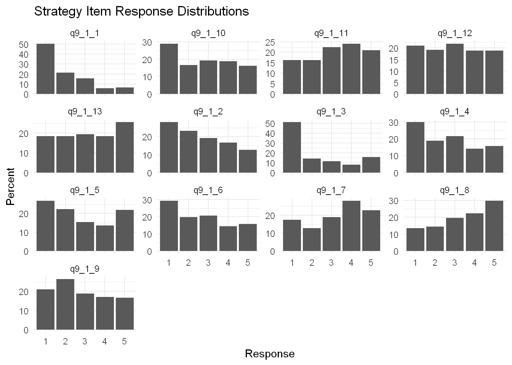
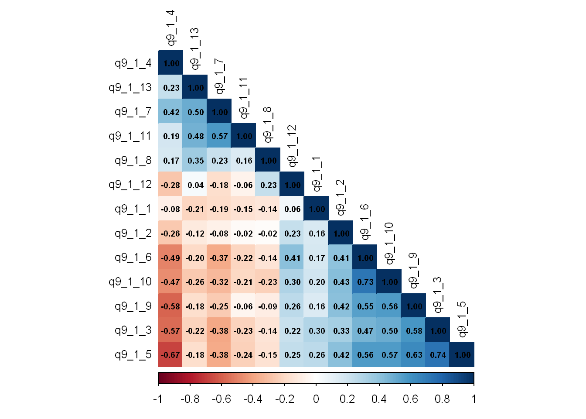
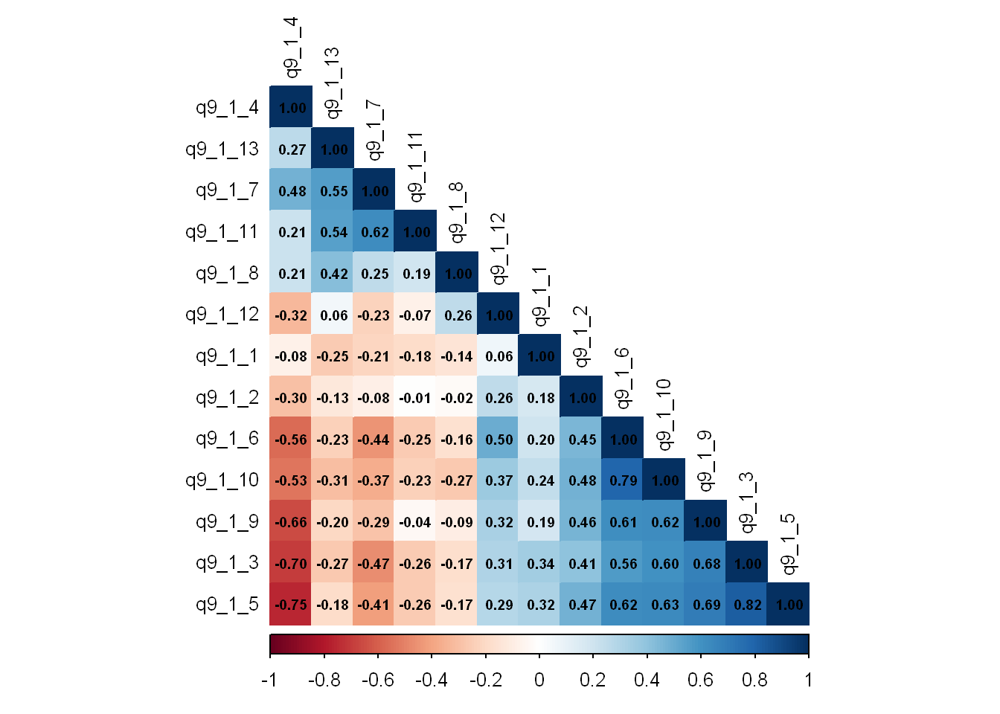
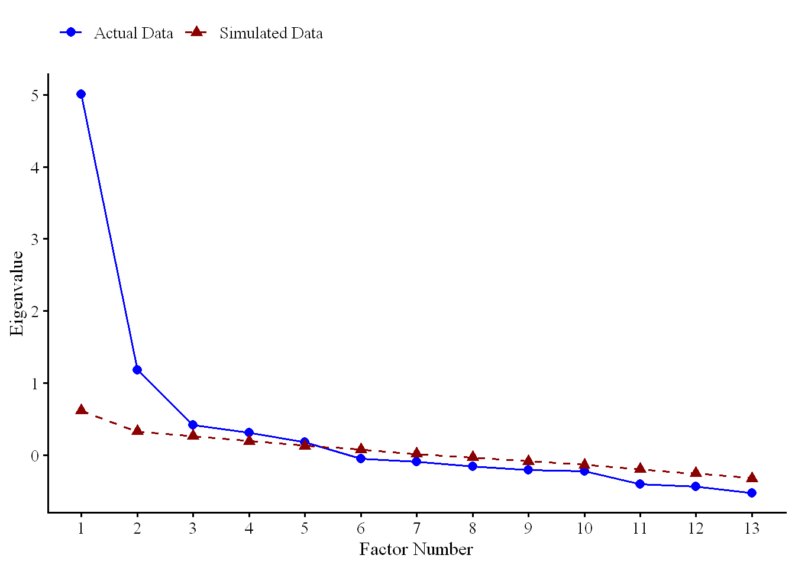
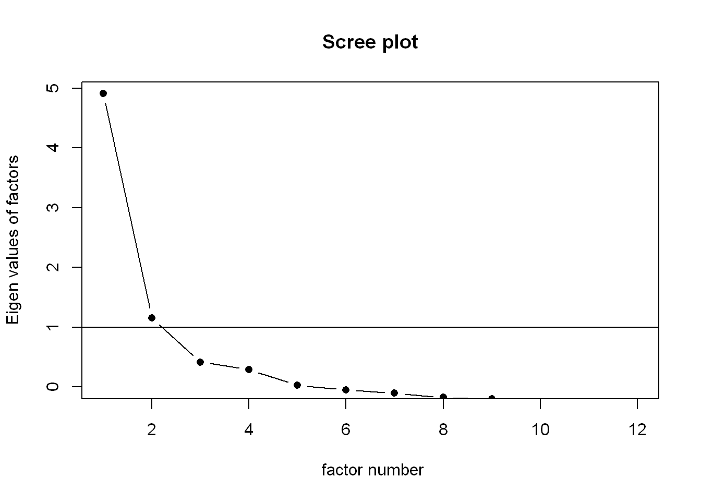
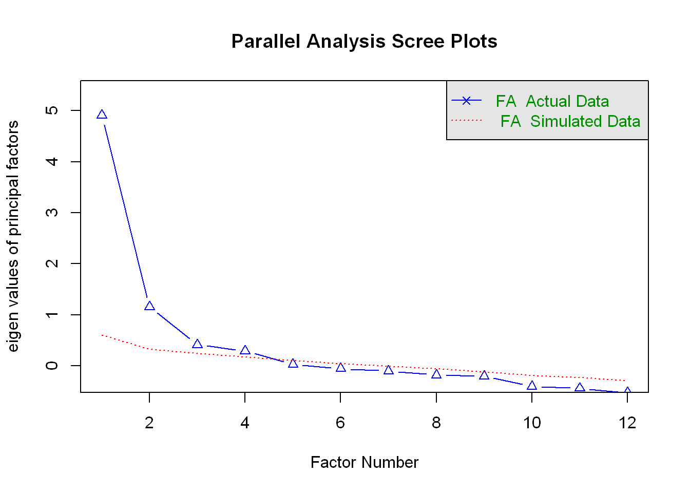
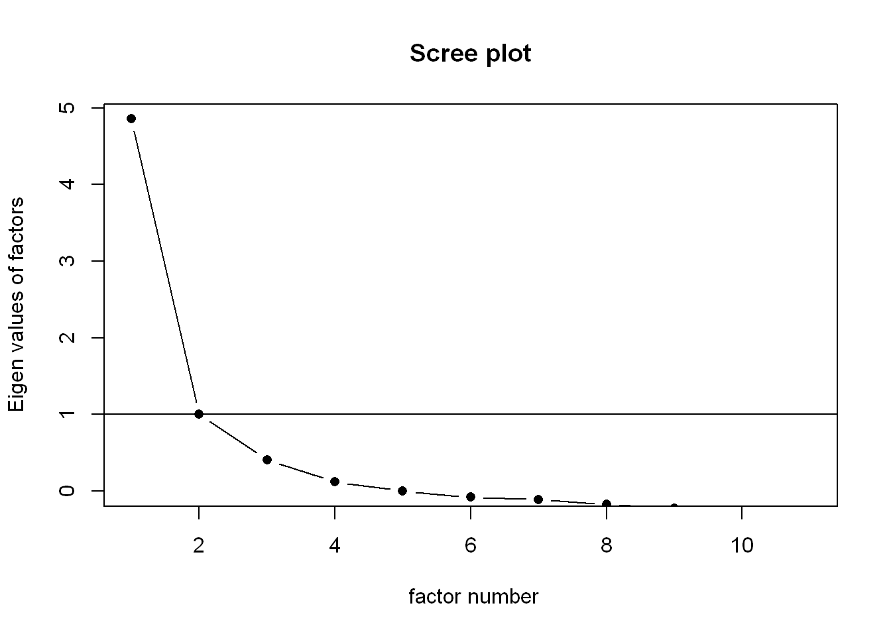
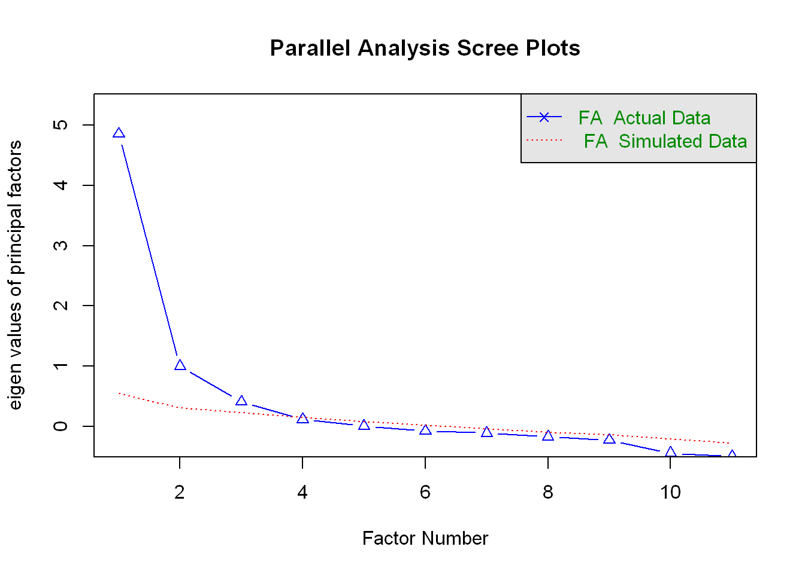

df <- readRDS("../data/df_full.rds")03-03_Strategies
Setup
Tutorial:
https://rpubs.com/pjmurphy/758265
https://quantdev.ssri.psu.edu/tutorials/intro-basic-exploratory-factor-analysis
1. Prepare strategy items
Define variables
Defining the 13 strategy items.
strategy_items <- c(
"q9_1_1",
"q9_1_2",
"q9_1_3",
"q9_1_4",
"q9_1_5",
"q9_1_6",
"q9_1_7",
"q9_1_8",
"q9_1_9",
"q9_1_10",
"q9_1_11",
"q9_1_12",
"q9_1_13"
)df_strategy <- df %>%
select(all_of(strategy_items))Check structure
# str(df_strategy)
#
# sapply(df_strategy, class)
#
# sapply(df_strategy, function(x) sort(unique(x)))Check number of participants in new df
Confirmation that the dataset contains the expected 230 participants.
nrow(df_strategy)[1] 230dplyr::n_distinct(df$prolific_pid)[1] 230Missingness
Two participants missed all of the items for the strategy measures. Therefore, they will be excluded.
# Two participants missing
strategy_missing <- tibble::tibble(
item = strategy_items,
n_valid = sapply(df_strategy, function(x) sum(!is.na(x))),
n_missing = sapply(df_strategy, function(x) sum(is.na(x))),
percent_missing = sapply(
df_strategy,
function(x) mean(is.na(x)) * 100
)
)
strategy_missing# A tibble: 13 × 4
item n_valid n_missing percent_missing
<chr> <int> <int> <dbl>
1 q9_1_1 228 2 0.870
2 q9_1_2 228 2 0.870
3 q9_1_3 228 2 0.870
4 q9_1_4 228 2 0.870
5 q9_1_5 228 2 0.870
6 q9_1_6 228 2 0.870
7 q9_1_7 228 2 0.870
8 q9_1_8 228 2 0.870
9 q9_1_9 228 2 0.870
10 q9_1_10 228 2 0.870
11 q9_1_11 228 2 0.870
12 q9_1_12 228 2 0.870
13 q9_1_13 228 2 0.870# Two participants who missed all items
# Otherwise everyone completed the items
df <- df %>%
mutate(
strategy_n_answered = rowSums(!is.na(across(all_of(strategy_items))))
)
table(df$strategy_n_answered)
0 13
2 228 sum(complete.cases(df_strategy))[1] 228mean(complete.cases(df_strategy)) * 100[1] 99.13043Remove missing cases
n = 228
Two participants are missing so they will be removed from the dataset.
df_strategy <- df_strategy[
complete.cases(df_strategy),
]dim(df_strategy)[1] 228 132. Examine item distributions
Summary / Descriptives
df_strategy <- df_strategy %>%
select(all_of(strategy_items)) %>%
mutate(
across(
everything(),
~ as.numeric(vctrs::vec_data(.x))
)
)The most positively skewed item is q9_1_1 at 1.13. q9_1_3 is also somewhat positively skewed at 0.81. Most other items are only mildly skewed. The kurtosis values are mostly negative, indicating relatively flatter distributions, but none are especially extreme.
strategy_descriptives <- psych::describe(df_strategy)
strategy_descriptives vars n mean sd median trimmed mad min max range skew kurtosis
q9_1_1 1 228 1.96 1.22 1 1.76 0.00 1 5 4 1.13 0.24
q9_1_2 2 228 2.63 1.38 2 2.54 1.48 1 5 4 0.33 -1.16
q9_1_3 3 228 2.24 1.52 1 2.05 0.00 1 5 4 0.81 -0.91
q9_1_4 4 228 2.67 1.43 3 2.59 1.48 1 5 4 0.30 -1.23
q9_1_5 5 228 2.82 1.51 3 2.77 1.48 1 5 4 0.23 -1.41
q9_1_6 6 228 2.68 1.43 3 2.60 1.48 1 5 4 0.30 -1.24
q9_1_7 7 228 3.26 1.40 4 3.32 1.48 1 5 4 -0.35 -1.17
q9_1_8 8 228 3.40 1.40 4 3.50 1.48 1 5 4 -0.38 -1.14
q9_1_9 9 228 2.82 1.39 3 2.78 1.48 1 5 4 0.22 -1.23
q9_1_10 10 228 2.77 1.46 3 2.71 1.48 1 5 4 0.16 -1.36
q9_1_11 11 228 3.18 1.37 3 3.22 1.48 1 5 4 -0.20 -1.18
q9_1_12 12 228 2.95 1.41 3 2.94 1.48 1 5 4 0.04 -1.28
q9_1_13 13 228 3.14 1.45 3 3.17 1.48 1 5 4 -0.11 -1.36
se
q9_1_1 0.08
q9_1_2 0.09
q9_1_3 0.10
q9_1_4 0.09
q9_1_5 0.10
q9_1_6 0.09
q9_1_7 0.09
q9_1_8 0.09
q9_1_9 0.09
q9_1_10 0.10
q9_1_11 0.09
q9_1_12 0.09
q9_1_13 0.10strategy_item_audit <- psych::describe(df_strategy) %>%
as.data.frame() %>%
tibble::rownames_to_column("item") %>%
tibble::as_tibble() %>%
dplyr::select(
item,
n,
mean,
sd,
median,
min,
max,
skew,
kurtosis
)
strategy_missing <- tibble::tibble(
item = names(df_strategy),
missing_n = colSums(is.na(df_strategy)),
missing_percent = colMeans(is.na(df_strategy)) * 100
)
strategy_item_audit <- strategy_item_audit %>%
dplyr::left_join(
strategy_missing,
by = "item"
) %>%
dplyr::mutate(
dplyr::across(
tidyselect::where(is.numeric),
~ round(.x, 2)
)
)
strategy_item_audit# A tibble: 13 × 11
item n mean sd median min max skew kurtosis missing_n
<chr> <dbl> <dbl> <dbl> <dbl> <dbl> <dbl> <dbl> <dbl> <dbl>
1 q9_1_1 228 1.96 1.22 1 1 5 1.13 0.24 0
2 q9_1_2 228 2.63 1.38 2 1 5 0.33 -1.16 0
3 q9_1_3 228 2.24 1.52 1 1 5 0.81 -0.91 0
4 q9_1_4 228 2.67 1.43 3 1 5 0.3 -1.23 0
5 q9_1_5 228 2.82 1.51 3 1 5 0.23 -1.41 0
6 q9_1_6 228 2.68 1.43 3 1 5 0.3 -1.24 0
7 q9_1_7 228 3.26 1.4 4 1 5 -0.35 -1.17 0
8 q9_1_8 228 3.4 1.4 4 1 5 -0.38 -1.14 0
9 q9_1_9 228 2.82 1.39 3 1 5 0.22 -1.23 0
10 q9_1_10 228 2.77 1.46 3 1 5 0.16 -1.36 0
11 q9_1_11 228 3.18 1.37 3 1 5 -0.2 -1.18 0
12 q9_1_12 228 2.95 1.41 3 1 5 0.04 -1.28 0
13 q9_1_13 228 3.14 1.45 3 1 5 -0.11 -1.36 0
# ℹ 1 more variable: missing_percent <dbl>Frequencies
About half of participants selected 1 as a response to q9_1_1.
strategy_frequencies <- df_strategy %>%
tidyr::pivot_longer(
cols = everything(),
names_to = "item",
values_to = "response"
) %>%
count(item, response, .drop = FALSE) %>%
group_by(item) %>%
mutate(
percent = n / sum(n) * 100
) %>%
ungroup()
strategy_frequencies# A tibble: 65 × 4
item response n percent
<chr> <dbl> <int> <dbl>
1 q9_1_1 1 115 50.4
2 q9_1_1 2 49 21.5
3 q9_1_1 3 36 15.8
4 q9_1_1 4 13 5.70
5 q9_1_1 5 15 6.58
6 q9_1_10 1 66 28.9
7 q9_1_10 2 38 16.7
8 q9_1_10 3 44 19.3
9 q9_1_10 4 43 18.9
10 q9_1_10 5 37 16.2
# ℹ 55 more rowsVisualization
strategy_plot_data <- df_strategy %>%
tidyr::pivot_longer(
cols = everything(),
names_to = "item",
values_to = "response"
) %>%
filter(!is.na(response)) %>%
count(item, response) %>%
group_by(item) %>%
mutate(
percent = 100 * n / sum(n)
) %>%
ungroup()
ggplot2::ggplot(
strategy_plot_data,
ggplot2::aes(
x = factor(response),
y = percent
)
) +
ggplot2::geom_col() +
ggplot2::facet_wrap(
~ item,
scales = "free_y"
) +
ggplot2::labs(
x = "Response",
y = "Percent",
title = "Strategy Item Response Distributions"
) +
ggplot2::theme_minimal()
skewness and kurtosis
psych::describe(df_strategy) vars n mean sd median trimmed mad min max range skew kurtosis
q9_1_1 1 228 1.96 1.22 1 1.76 0.00 1 5 4 1.13 0.24
q9_1_2 2 228 2.63 1.38 2 2.54 1.48 1 5 4 0.33 -1.16
q9_1_3 3 228 2.24 1.52 1 2.05 0.00 1 5 4 0.81 -0.91
q9_1_4 4 228 2.67 1.43 3 2.59 1.48 1 5 4 0.30 -1.23
q9_1_5 5 228 2.82 1.51 3 2.77 1.48 1 5 4 0.23 -1.41
q9_1_6 6 228 2.68 1.43 3 2.60 1.48 1 5 4 0.30 -1.24
q9_1_7 7 228 3.26 1.40 4 3.32 1.48 1 5 4 -0.35 -1.17
q9_1_8 8 228 3.40 1.40 4 3.50 1.48 1 5 4 -0.38 -1.14
q9_1_9 9 228 2.82 1.39 3 2.78 1.48 1 5 4 0.22 -1.23
q9_1_10 10 228 2.77 1.46 3 2.71 1.48 1 5 4 0.16 -1.36
q9_1_11 11 228 3.18 1.37 3 3.22 1.48 1 5 4 -0.20 -1.18
q9_1_12 12 228 2.95 1.41 3 2.94 1.48 1 5 4 0.04 -1.28
q9_1_13 13 228 3.14 1.45 3 3.17 1.48 1 5 4 -0.11 -1.36
se
q9_1_1 0.08
q9_1_2 0.09
q9_1_3 0.10
q9_1_4 0.09
q9_1_5 0.10
q9_1_6 0.09
q9_1_7 0.09
q9_1_8 0.09
q9_1_9 0.09
q9_1_10 0.10
q9_1_11 0.09
q9_1_12 0.09
q9_1_13 0.10Correlations
Pick a correlation matrix and provide justification for selection.
Items themselves are 5-point ordinal items, and some distributions are asymmetric. This provides justificiation for using polychoric correlations for the EFA.
Both of the correlation matrics have the same general pattern.
pearson
strategy_cor_pearson <- cor(
df_strategy,
use = "complete.obs",
method = "pearson"
)
round(strategy_cor_pearson, 2) q9_1_1 q9_1_2 q9_1_3 q9_1_4 q9_1_5 q9_1_6 q9_1_7 q9_1_8 q9_1_9 q9_1_10
q9_1_1 1.00 0.16 0.30 -0.08 0.26 0.17 -0.19 -0.14 0.16 0.20
q9_1_2 0.16 1.00 0.33 -0.26 0.42 0.41 -0.08 -0.02 0.42 0.43
q9_1_3 0.30 0.33 1.00 -0.57 0.74 0.47 -0.38 -0.14 0.58 0.50
q9_1_4 -0.08 -0.26 -0.57 1.00 -0.67 -0.49 0.42 0.17 -0.58 -0.47
q9_1_5 0.26 0.42 0.74 -0.67 1.00 0.56 -0.38 -0.15 0.63 0.57
q9_1_6 0.17 0.41 0.47 -0.49 0.56 1.00 -0.37 -0.14 0.55 0.73
q9_1_7 -0.19 -0.08 -0.38 0.42 -0.38 -0.37 1.00 0.23 -0.25 -0.32
q9_1_8 -0.14 -0.02 -0.14 0.17 -0.15 -0.14 0.23 1.00 -0.09 -0.23
q9_1_9 0.16 0.42 0.58 -0.58 0.63 0.55 -0.25 -0.09 1.00 0.56
q9_1_10 0.20 0.43 0.50 -0.47 0.57 0.73 -0.32 -0.23 0.56 1.00
q9_1_11 -0.15 -0.02 -0.23 0.19 -0.24 -0.22 0.57 0.16 -0.06 -0.21
q9_1_12 0.06 0.23 0.22 -0.28 0.25 0.41 -0.18 0.23 0.26 0.30
q9_1_13 -0.21 -0.12 -0.22 0.23 -0.18 -0.20 0.50 0.35 -0.18 -0.26
q9_1_11 q9_1_12 q9_1_13
q9_1_1 -0.15 0.06 -0.21
q9_1_2 -0.02 0.23 -0.12
q9_1_3 -0.23 0.22 -0.22
q9_1_4 0.19 -0.28 0.23
q9_1_5 -0.24 0.25 -0.18
q9_1_6 -0.22 0.41 -0.20
q9_1_7 0.57 -0.18 0.50
q9_1_8 0.16 0.23 0.35
q9_1_9 -0.06 0.26 -0.18
q9_1_10 -0.21 0.30 -0.26
q9_1_11 1.00 -0.06 0.48
q9_1_12 -0.06 1.00 0.04
q9_1_13 0.48 0.04 1.00corrplot::corrplot(
strategy_cor_pearson,
method = "color",
type = "lower",
order = "hclust",
addCoef.col = "black",
tl.col = "black",
tl.cex = 0.8,
number.cex = 0.6
)
polychoric
strategy_poly <- psych::polychoric(df_strategy)
strategy_cor_poly <- strategy_poly$rho
round(strategy_cor_poly, 2) q9_1_1 q9_1_2 q9_1_3 q9_1_4 q9_1_5 q9_1_6 q9_1_7 q9_1_8 q9_1_9 q9_1_10
q9_1_1 1.00 0.18 0.34 -0.08 0.32 0.20 -0.21 -0.14 0.19 0.24
q9_1_2 0.18 1.00 0.41 -0.30 0.47 0.45 -0.08 -0.02 0.46 0.48
q9_1_3 0.34 0.41 1.00 -0.70 0.82 0.56 -0.47 -0.17 0.68 0.60
q9_1_4 -0.08 -0.30 -0.70 1.00 -0.75 -0.56 0.48 0.21 -0.66 -0.53
q9_1_5 0.32 0.47 0.82 -0.75 1.00 0.62 -0.41 -0.17 0.69 0.63
q9_1_6 0.20 0.45 0.56 -0.56 0.62 1.00 -0.44 -0.16 0.61 0.79
q9_1_7 -0.21 -0.08 -0.47 0.48 -0.41 -0.44 1.00 0.25 -0.29 -0.37
q9_1_8 -0.14 -0.02 -0.17 0.21 -0.17 -0.16 0.25 1.00 -0.09 -0.27
q9_1_9 0.19 0.46 0.68 -0.66 0.69 0.61 -0.29 -0.09 1.00 0.62
q9_1_10 0.24 0.48 0.60 -0.53 0.63 0.79 -0.37 -0.27 0.62 1.00
q9_1_11 -0.18 -0.01 -0.26 0.21 -0.26 -0.25 0.62 0.19 -0.04 -0.23
q9_1_12 0.06 0.26 0.31 -0.32 0.29 0.50 -0.23 0.26 0.32 0.37
q9_1_13 -0.25 -0.13 -0.27 0.27 -0.18 -0.23 0.55 0.42 -0.20 -0.31
q9_1_11 q9_1_12 q9_1_13
q9_1_1 -0.18 0.06 -0.25
q9_1_2 -0.01 0.26 -0.13
q9_1_3 -0.26 0.31 -0.27
q9_1_4 0.21 -0.32 0.27
q9_1_5 -0.26 0.29 -0.18
q9_1_6 -0.25 0.50 -0.23
q9_1_7 0.62 -0.23 0.55
q9_1_8 0.19 0.26 0.42
q9_1_9 -0.04 0.32 -0.20
q9_1_10 -0.23 0.37 -0.31
q9_1_11 1.00 -0.07 0.54
q9_1_12 -0.07 1.00 0.06
q9_1_13 0.54 0.06 1.00corrplot::corrplot(
strategy_cor_poly,
method = "color",
type = "lower",
order = "hclust",
addCoef.col = "black",
tl.col = "black",
tl.cex = 0.8,
number.cex = 0.6
)
comparison
cor(
strategy_cor_pearson[lower.tri(strategy_cor_pearson)],
strategy_cor_poly[lower.tri(strategy_cor_poly)]
)[1] 0.99905793. Select correlation matrix
Looking for meaningful correlations to suggest a common factor. No relationships -> no EFA.
strategy_cor <- strategy_cor_poly4. Assess factorability
KMO
KMO evaluates whether the pattern of correlations is suitable for factor analysis. Very low values can suggest that the items do not share enough common variance.
Interpretation as per pjmurphy.
- 0.00 to 0.49 unacceptable
- 0.50 to 0.59 miserable
- 0.60 to 0.69 mediocre
- 0.70 to 0.79 middling
- 0.80 to 0.89 meritorious
- 0.90 to 1.00 marvelous
This means that the overall pattern of shared variance is suitable for factor analysis.
kmo_strategy <- psych::KMO(strategy_cor)kmo_sentence <- sprintf(
"The Kaiser-Meyer-Olkin measure supported the suitability of the data for factor analysis, with an overall MSA of %.2f and item-level MSA values ranging from %.2f to %.2f.",
kmo_strategy$MSA,
min(kmo_strategy$MSAi),
max(kmo_strategy$MSAi)
)Bartlett’s test
A significant Bartlett test indicates that the correlation matrix differs from an identity matrix, which supports proceeding with a factor analysis. It should not be used as the only factorability criterion.
χ²(78) = 1683.75, p < .001
bartlett_strategy <- psych::cortest.bartlett(
strategy_cor,
n = nrow(df_strategy)
)bartlett_sentence <- sprintf(
"Bartlett's test of sphericity was significant, χ²(%d) = %.2f, p < .001, indicating that the correlation matrix differed significantly from an identity matrix.",
bartlett_strategy$df,
bartlett_strategy$chisq
)
bartlett_sentence[1] "Bartlett's test of sphericity was significant, χ²(78) = 1683.75, p < .001, indicating that the correlation matrix differed significantly from an identity matrix."5. Determine the Number of Factors
Use scree plot. Also parallel analysis.
Parallel Analysis
Parallel analysis based on the polychoric correlation matrix suggested five factors.
# Using polychoric matrix
set.seed(12345)
strategy_parallel <- psych::fa.parallel(
strategy_cor,
n.obs = nrow(df_strategy),
fa = "fa",
cor = "cor",
plot = TRUE
)Warning in fa.stats(r = r, f = f, phi = phi, n.obs = n.obs, np.obs = np.obs, :
The estimated weights for the factor scores are probably incorrect. Try a
different factor score estimation method.Parallel analysis suggests that the number of factors = 5 and the number of components = NA parallel_plot_df <- data.frame(
Factor = seq_along(strategy_parallel$fa.values),
Actual = strategy_parallel$fa.values,
Simulated = strategy_parallel$fa.sim
)
parallel_plot_long <- parallel_plot_df %>%
pivot_longer(
cols = c(Actual, Simulated),
names_to = "Type",
values_to = "Eigenvalue"
)parallel_plot <- ggplot(
parallel_plot_long,
aes(
x = Factor,
y = Eigenvalue,
color = Type,
linetype = Type,
shape = Type
)
) +
geom_line(linewidth = 0.7) +
geom_point(size = 2.5) +
scale_color_manual(
values = c(
"Actual" = "blue",
"Simulated" = "darkred"
),
labels = c(
"Actual" = "Actual Data",
"Simulated" = "Simulated Data"
)
) +
scale_linetype_manual(
values = c(
"Actual" = "solid",
"Simulated" = "dashed"
),
labels = c(
"Actual" = "Actual Data",
"Simulated" = "Simulated Data"
)
) +
scale_shape_manual(
values = c(
"Actual" = 16,
"Simulated" = 17
),
labels = c(
"Actual" = "Actual Data",
"Simulated" = "Simulated Data"
)
) +
scale_x_continuous(
breaks = 1:max(parallel_plot_long$Factor)
) +
labs(
x = "Factor Number",
y = "Eigenvalue",
color = NULL,
linetype = NULL,
shape = NULL
) +
theme_classic(base_family = "serif", base_size = 12) +
theme(
legend.position = "top",
legend.justification = "left",
axis.title = element_text(size = 12),
axis.text = element_text(size = 11),
legend.text = element_text(size = 11)
)
parallel_plot
Scree plot
psych::scree(
strategy_cor,
factors = TRUE,
pc = FALSE
)Eigenvalues
strategy_eigenvalues <- eigen(
strategy_cor
)$values
strategy_eigen_table <- tibble::tibble(
factor = seq_along(strategy_eigenvalues),
eigenvalue = strategy_eigenvalues
)
strategy_eigen_table# A tibble: 13 × 2
factor eigenvalue
<int> <dbl>
1 1 5.47
2 2 1.98
3 3 1.15
4 4 0.960
5 5 0.813
6 6 0.641
7 7 0.473
8 8 0.420
9 9 0.309
10 10 0.248
11 11 0.247
12 12 0.167
13 13 0.129When deciding on factor count, consider:
- parallel analysis,
- scree plot,
- eigenvalues,
- interpretability of the solution,
- whether each retained factor has enough substantive indicators.
6. Evaluate Candidate Factor Solutions
ML may be useful when item distributions and multivariate behavior are sufficiently close to the assumptions needed for ML-based estimation.
PAF is often a useful choice when normality is questionable. Promax is an oblique rotation, which allows factors to correlate. This aligns with the expectation that strategy dimensions may overlap rather than being independent.
Initial Evaluation
efa_1
The 1-factor model does not appear to represent the item set well. Several items have weak loadings and very low communalities, and the overall fit is poor: RMSR = .13, TLI = .62, and RMSEA = .19.
Evidence that the strategy items are not uni-dimensional.
efa_1 <- psych::fa(
strategy_cor,
nfactors = 1,
n.obs = nrow(df_strategy),
rotate = "promax",
fm = "pa"
)
efa_1Factor Analysis using method = pa
Call: psych::fa(r = strategy_cor, nfactors = 1, n.obs = nrow(df_strategy),
rotate = "promax", fm = "pa")
Standardized loadings (pattern matrix) based upon correlation matrix
PA1 h2 u2 com
q9_1_1 0.31 0.099 0.90 1
q9_1_2 0.49 0.239 0.76 1
q9_1_3 0.84 0.701 0.30 1
q9_1_4 -0.77 0.590 0.41 1
q9_1_5 0.86 0.736 0.26 1
q9_1_6 0.80 0.633 0.37 1
q9_1_7 -0.57 0.324 0.68 1
q9_1_8 -0.24 0.058 0.94 1
q9_1_9 0.75 0.564 0.44 1
q9_1_10 0.80 0.634 0.37 1
q9_1_11 -0.35 0.124 0.88 1
q9_1_12 0.39 0.152 0.85 1
q9_1_13 -0.39 0.153 0.85 1
PA1
SS loadings 5.01
Proportion Var 0.39
Mean item complexity = 1
Test of the hypothesis that 1 factor is sufficient.
df null model = 78 with the objective function = 7.59 with Chi Square = 1683.75
df of the model are 65 and the objective function was 2.6
The root mean square of the residuals (RMSR) is 0.13
The df corrected root mean square of the residuals is 0.14
The harmonic n.obs is 228 with the empirical chi square 560.3 with prob < 6.5e-80
The total n.obs was 228 with Likelihood Chi Square = 575.63 with prob < 7.1e-83
Tucker Lewis Index of factoring reliability = 0.617
RMSEA index = 0.186 and the 90 % confidence intervals are 0.172 0.2
BIC = 222.73
Fit based upon off diagonal values = 0.9
Measures of factor score adequacy
PA1
Correlation of (regression) scores with factors 0.96
Multiple R square of scores with factors 0.93
Minimum correlation of possible factor scores 0.86efa_2
The two-factor solution produced a relatively clear simple structure. Eight items primarily defined the first factor and four items primarily defined the second factor, with little evidence of substantial cross-loading. q9_1_1 was not well represented by either factor, with a maximum absolute pattern coefficient of .22 and a communality of .11. q9_1_8 and q9_1_12 also had relatively low communalities (.19 and .23, respectively), although both demonstrated interpretable primary loadings. The two factors were moderately correlated, r = -.42.
efa_2 <- psych::fa(
strategy_cor,
nfactors = 2,
n.obs = nrow(df_strategy),
rotate = "promax",
fm = "pa"
)Loading required namespace: GPArotationefa_2Factor Analysis using method = pa
Call: psych::fa(r = strategy_cor, nfactors = 2, n.obs = nrow(df_strategy),
rotate = "promax", fm = "pa")
Standardized loadings (pattern matrix) based upon correlation matrix
PA1 PA2 h2 u2 com
q9_1_1 0.18 -0.22 0.11 0.89 1.9
q9_1_2 0.60 0.14 0.31 0.69 1.1
q9_1_3 0.76 -0.15 0.70 0.30 1.1
q9_1_4 -0.69 0.15 0.59 0.41 1.1
q9_1_5 0.84 -0.07 0.76 0.24 1.0
q9_1_6 0.76 -0.08 0.65 0.35 1.0
q9_1_7 -0.15 0.71 0.61 0.39 1.1
q9_1_8 0.05 0.46 0.19 0.81 1.0
q9_1_9 0.85 0.09 0.66 0.34 1.0
q9_1_10 0.73 -0.13 0.63 0.37 1.1
q9_1_11 0.11 0.74 0.50 0.50 1.0
q9_1_12 0.52 0.17 0.23 0.77 1.2
q9_1_13 0.11 0.82 0.61 0.39 1.0
PA1 PA2
SS loadings 4.37 2.18
Proportion Var 0.34 0.17
Cumulative Var 0.34 0.50
Proportion Explained 0.67 0.33
Cumulative Proportion 0.67 1.00
With factor correlations of
PA1 PA2
PA1 1.00 -0.42
PA2 -0.42 1.00
Mean item complexity = 1.1
Test of the hypothesis that 2 factors are sufficient.
df null model = 78 with the objective function = 7.59 with Chi Square = 1683.75
df of the model are 53 and the objective function was 1.61
The root mean square of the residuals (RMSR) is 0.07
The df corrected root mean square of the residuals is 0.08
The harmonic n.obs is 228 with the empirical chi square 166.91 with prob < 1e-13
The total n.obs was 228 with Likelihood Chi Square = 354.62 with prob < 3.2e-46
Tucker Lewis Index of factoring reliability = 0.722
RMSEA index = 0.158 and the 90 % confidence intervals are 0.143 0.174
BIC = 66.86
Fit based upon off diagonal values = 0.97
Measures of factor score adequacy
PA1 PA2
Correlation of (regression) scores with factors 0.96 0.91
Multiple R square of scores with factors 0.93 0.83
Minimum correlation of possible factor scores 0.86 0.67print(
efa_2$loadings,
cutoff = .20,
sort = TRUE
)
Loadings:
PA1 PA2
q9_1_2 0.600
q9_1_3 0.758
q9_1_4 -0.691
q9_1_5 0.837
q9_1_6 0.764
q9_1_9 0.848
q9_1_10 0.734
q9_1_12 0.523
q9_1_7 0.710
q9_1_11 0.744
q9_1_13 0.818
q9_1_1 -0.224
q9_1_8 0.456
PA1 PA2
SS loadings 4.306 2.115
Proportion Var 0.331 0.163
Cumulative Var 0.331 0.494round(
efa_2$communality,
2
) q9_1_1 q9_1_2 q9_1_3 q9_1_4 q9_1_5 q9_1_6 q9_1_7 q9_1_8 q9_1_9 q9_1_10
0.11 0.31 0.70 0.59 0.76 0.65 0.61 0.19 0.66 0.63
q9_1_11 q9_1_12 q9_1_13
0.50 0.23 0.61 efa_3
The three-factor solution improved overall statistical fit, but the third factor was primarily defined by q9_1_12 and q9_1_8. Thus, the additional factor was supported by relatively few substantive indicators. The first two factors remained broadly similar to those observed in the two-factor solution, suggesting that the third factor primarily separated a small subset of items rather than revealing a clearly defined broader dimension.
efa_3 <- psych::fa(
strategy_cor,
nfactors = 3,
n.obs = nrow(df_strategy),
rotate = "promax",
fm = "pa"
)
efa_3Factor Analysis using method = pa
Call: psych::fa(r = strategy_cor, nfactors = 3, n.obs = nrow(df_strategy),
rotate = "promax", fm = "pa")
Standardized loadings (pattern matrix) based upon correlation matrix
PA1 PA2 PA3 h2 u2 com
q9_1_1 0.22 -0.15 -0.08 0.12 0.88 2.1
q9_1_2 0.62 0.18 0.04 0.31 0.69 1.2
q9_1_3 0.82 -0.05 -0.03 0.71 0.29 1.0
q9_1_4 -0.72 0.08 -0.01 0.59 0.41 1.0
q9_1_5 0.91 0.05 -0.05 0.79 0.21 1.0
q9_1_6 0.68 -0.17 0.26 0.67 0.33 1.4
q9_1_7 -0.03 0.85 -0.17 0.70 0.30 1.1
q9_1_8 -0.14 0.23 0.43 0.33 0.67 1.7
q9_1_9 0.91 0.20 -0.01 0.69 0.31 1.1
q9_1_10 0.74 -0.09 0.07 0.63 0.37 1.0
q9_1_11 0.22 0.88 -0.12 0.59 0.41 1.2
q9_1_12 0.26 -0.17 0.78 0.72 0.28 1.3
q9_1_13 0.03 0.70 0.19 0.57 0.43 1.2
PA1 PA2 PA3
SS loadings 4.38 2.09 0.94
Proportion Var 0.34 0.16 0.07
Cumulative Var 0.34 0.50 0.57
Proportion Explained 0.59 0.28 0.13
Cumulative Proportion 0.59 0.87 1.00
With factor correlations of
PA1 PA2 PA3
PA1 1.00 -0.52 0.06
PA2 -0.52 1.00 0.25
PA3 0.06 0.25 1.00
Mean item complexity = 1.3
Test of the hypothesis that 3 factors are sufficient.
df null model = 78 with the objective function = 7.59 with Chi Square = 1683.75
df of the model are 42 and the objective function was 1.19
The root mean square of the residuals (RMSR) is 0.05
The df corrected root mean square of the residuals is 0.07
The harmonic n.obs is 228 with the empirical chi square 89.04 with prob < 3.1e-05
The total n.obs was 228 with Likelihood Chi Square = 261.86 with prob < 1.5e-33
Tucker Lewis Index of factoring reliability = 0.743
RMSEA index = 0.151 and the 90 % confidence intervals are 0.135 0.17
BIC = 33.83
Fit based upon off diagonal values = 0.98
Measures of factor score adequacy
PA1 PA2 PA3
Correlation of (regression) scores with factors 0.97 0.93 0.86
Multiple R square of scores with factors 0.94 0.86 0.73
Minimum correlation of possible factor scores 0.88 0.71 0.47print(
efa_3$loadings,
cutoff = .20,
sort = TRUE
)
Loadings:
PA1 PA2 PA3
q9_1_2 0.621
q9_1_3 0.816
q9_1_4 -0.719
q9_1_5 0.914
q9_1_6 0.678 0.261
q9_1_9 0.915 0.201
q9_1_10 0.738
q9_1_7 0.845
q9_1_11 0.217 0.881
q9_1_13 0.698
q9_1_12 0.262 0.784
q9_1_1 0.222
q9_1_8 0.229 0.433
PA1 PA2 PA3
SS loadings 4.432 2.203 0.965
Proportion Var 0.341 0.169 0.074
Cumulative Var 0.341 0.510 0.585round(
efa_3$communality,
2
) q9_1_1 q9_1_2 q9_1_3 q9_1_4 q9_1_5 q9_1_6 q9_1_7 q9_1_8 q9_1_9 q9_1_10
0.12 0.31 0.71 0.59 0.79 0.67 0.70 0.33 0.69 0.63
q9_1_11 q9_1_12 q9_1_13
0.59 0.72 0.57 efa_4
Although the four-factor solution improved statistical fit, the additional factors produced a more fragmented structure. One factor was primarily defined by q9_1_8 and q9_1_12, while q9_1_12 also loaded substantially on another factor. In addition, two of the larger factors were strongly correlated (r = .75), suggesting that the four-factor solution may have separated a broader underlying dimension into highly related subcomponents.
efa_4 <- psych::fa(
strategy_cor,
nfactors = 4,
n.obs = nrow(df_strategy),
rotate = "promax",
fm = "pa"
)
efa_4Factor Analysis using method = pa
Call: psych::fa(r = strategy_cor, nfactors = 4, n.obs = nrow(df_strategy),
rotate = "promax", fm = "pa")
Standardized loadings (pattern matrix) based upon correlation matrix
PA1 PA4 PA2 PA3 h2 u2 com
q9_1_1 0.15 0.09 -0.12 -0.12 0.12 0.88 3.5
q9_1_2 0.20 0.48 0.20 -0.01 0.33 0.67 1.7
q9_1_3 0.88 -0.04 -0.09 0.01 0.79 0.21 1.0
q9_1_4 -0.77 0.03 0.12 -0.05 0.64 0.36 1.1
q9_1_5 0.95 -0.02 0.02 0.00 0.87 0.13 1.0
q9_1_6 0.02 0.82 -0.12 0.16 0.79 0.21 1.1
q9_1_7 -0.19 0.10 0.86 -0.13 0.76 0.24 1.2
q9_1_8 0.01 -0.12 0.11 0.57 0.42 0.58 1.2
q9_1_9 0.63 0.30 0.17 0.00 0.66 0.34 1.6
q9_1_10 0.01 0.89 0.01 -0.09 0.82 0.18 1.0
q9_1_11 0.06 0.09 0.83 -0.05 0.58 0.42 1.0
q9_1_12 -0.01 0.45 -0.19 0.66 0.60 0.40 2.0
q9_1_13 0.12 -0.12 0.60 0.32 0.60 0.40 1.7
PA1 PA4 PA2 PA3
SS loadings 2.97 2.18 1.95 0.90
Proportion Var 0.23 0.17 0.15 0.07
Cumulative Var 0.23 0.40 0.55 0.62
Proportion Explained 0.37 0.27 0.24 0.11
Cumulative Proportion 0.37 0.64 0.89 1.00
With factor correlations of
PA1 PA4 PA2 PA3
PA1 1.00 0.75 -0.44 -0.10
PA4 0.75 1.00 -0.44 -0.09
PA2 -0.44 -0.44 1.00 0.34
PA3 -0.10 -0.09 0.34 1.00
Mean item complexity = 1.5
Test of the hypothesis that 4 factors are sufficient.
df null model = 78 with the objective function = 7.59 with Chi Square = 1683.75
df of the model are 32 and the objective function was 0.56
The root mean square of the residuals (RMSR) is 0.03
The df corrected root mean square of the residuals is 0.05
The harmonic n.obs is 228 with the empirical chi square 39.69 with prob < 0.16
The total n.obs was 228 with Likelihood Chi Square = 122.14 with prob < 1.9e-12
Tucker Lewis Index of factoring reliability = 0.861
RMSEA index = 0.111 and the 90 % confidence intervals are 0.091 0.133
BIC = -51.6
Fit based upon off diagonal values = 0.99
Measures of factor score adequacy
PA1 PA4 PA2 PA3
Correlation of (regression) scores with factors 0.97 0.95 0.93 0.83
Multiple R square of scores with factors 0.94 0.91 0.86 0.69
Minimum correlation of possible factor scores 0.89 0.82 0.73 0.38print(
efa_4$loadings,
cutoff = .20,
sort = TRUE
)
Loadings:
PA1 PA4 PA2 PA3
q9_1_3 0.880
q9_1_4 -0.767
q9_1_5 0.953
q9_1_9 0.632 0.301
q9_1_6 0.821
q9_1_10 0.893
q9_1_7 0.861
q9_1_11 0.829
q9_1_13 0.598 0.323
q9_1_8 0.575
q9_1_12 0.451 0.659
q9_1_1
q9_1_2 0.204 0.477 0.204
PA1 PA4 PA2 PA3
SS loadings 2.790 2.052 1.957 0.938
Proportion Var 0.215 0.158 0.151 0.072
Cumulative Var 0.215 0.372 0.523 0.595round(
efa_4$communality,
2
) q9_1_1 q9_1_2 q9_1_3 q9_1_4 q9_1_5 q9_1_6 q9_1_7 q9_1_8 q9_1_9 q9_1_10
0.12 0.33 0.79 0.64 0.87 0.79 0.76 0.42 0.66 0.82
q9_1_11 q9_1_12 q9_1_13
0.58 0.60 0.60 efa_5
The five-factor solution did not yield five clearly defined dimensions. The fifth factor was primarily defined by q9_1_1, with other associated items loading more strongly on different factors. Another factor was primarily defined by q9_1_8 and q9_1_12, and q9_1_12 showed nearly equivalent loadings on two factors (.51 and .50). Two of the larger factors also remained strongly correlated (r = .72). Thus, despite the five-factor recommendation from parallel analysis, the five-factor solution showed evidence of weak factor definition and increased item complexity.
efa_5 <- psych::fa(
strategy_cor,
nfactors = 5,
n.obs = nrow(df_strategy),
rotate = "promax",
fm = "pa"
)
efa_5Factor Analysis using method = pa
Call: psych::fa(r = strategy_cor, nfactors = 5, n.obs = nrow(df_strategy),
rotate = "promax", fm = "pa")
Standardized loadings (pattern matrix) based upon correlation matrix
PA1 PA4 PA2 PA3 PA5 h2 u2 com
q9_1_1 -0.04 0.02 -0.13 0.01 0.49 0.27 0.73 1.2
q9_1_2 0.07 0.46 0.19 0.02 0.21 0.37 0.63 1.8
q9_1_3 0.70 -0.02 -0.09 0.07 0.31 0.81 0.19 1.4
q9_1_4 -1.07 0.03 0.11 0.12 0.39 0.96 0.04 1.3
q9_1_5 0.76 0.03 0.00 0.04 0.27 0.86 0.14 1.3
q9_1_6 0.00 0.90 -0.12 0.00 -0.10 0.82 0.18 1.1
q9_1_7 -0.22 0.01 0.79 -0.05 0.01 0.75 0.25 1.2
q9_1_8 -0.06 -0.14 0.07 0.69 0.06 0.52 0.48 1.1
q9_1_9 0.55 0.34 0.15 -0.04 0.03 0.65 0.35 1.9
q9_1_10 -0.01 0.88 0.00 -0.19 0.03 0.81 0.19 1.1
q9_1_11 0.07 0.07 0.79 -0.06 -0.15 0.61 0.39 1.1
q9_1_12 0.00 0.50 -0.16 0.51 -0.11 0.55 0.45 2.3
q9_1_13 0.07 -0.10 0.55 0.33 -0.11 0.58 0.42 1.9
PA1 PA4 PA2 PA3 PA5
SS loadings 2.78 2.36 1.80 0.93 0.68
Proportion Var 0.21 0.18 0.14 0.07 0.05
Cumulative Var 0.21 0.40 0.53 0.61 0.66
Proportion Explained 0.33 0.28 0.21 0.11 0.08
Cumulative Proportion 0.33 0.60 0.81 0.92 1.00
With factor correlations of
PA1 PA4 PA2 PA3 PA5
PA1 1.00 0.72 -0.32 -0.02 0.45
PA4 0.72 1.00 -0.31 0.05 0.45
PA2 -0.32 -0.31 1.00 0.28 -0.23
PA3 -0.02 0.05 0.28 1.00 -0.23
PA5 0.45 0.45 -0.23 -0.23 1.00
Mean item complexity = 1.4
Test of the hypothesis that 5 factors are sufficient.
df null model = 78 with the objective function = 7.59 with Chi Square = 1683.75
df of the model are 23 and the objective function was 0.3
The root mean square of the residuals (RMSR) is 0.02
The df corrected root mean square of the residuals is 0.04
The harmonic n.obs is 228 with the empirical chi square 13.72 with prob < 0.93
The total n.obs was 228 with Likelihood Chi Square = 66.15 with prob < 4.7e-06
Tucker Lewis Index of factoring reliability = 0.907
RMSEA index = 0.091 and the 90 % confidence intervals are 0.066 0.117
BIC = -58.72
Fit based upon off diagonal values = 1
Measures of factor score adequacy
PA1 PA4 PA2 PA3 PA5
Correlation of (regression) scores with factors 0.98 0.96 0.92 0.83 0.90
Multiple R square of scores with factors 0.96 0.92 0.84 0.69 0.81
Minimum correlation of possible factor scores 0.93 0.83 0.69 0.37 0.62print(
efa_5$loadings,
cutoff = .20,
sort = TRUE
)
Loadings:
PA1 PA4 PA2 PA3 PA5
q9_1_3 0.705 0.311
q9_1_4 -1.073 0.386
q9_1_5 0.757 0.266
q9_1_9 0.549 0.345
q9_1_6 0.905
q9_1_10 0.881
q9_1_7 -0.221 0.788
q9_1_11 0.793
q9_1_13 0.548 0.334
q9_1_8 0.695
q9_1_12 0.498 0.510
q9_1_1 0.489
q9_1_2 0.460 0.211
PA1 PA4 PA2 PA3 PA5
SS loadings 2.592 2.209 1.689 0.919 0.662
Proportion Var 0.199 0.170 0.130 0.071 0.051
Cumulative Var 0.199 0.369 0.499 0.570 0.621round(
efa_5$communality,
2
) q9_1_1 q9_1_2 q9_1_3 q9_1_4 q9_1_5 q9_1_6 q9_1_7 q9_1_8 q9_1_9 q9_1_10
0.27 0.37 0.81 0.96 0.86 0.82 0.75 0.52 0.65 0.81
q9_1_11 q9_1_12 q9_1_13
0.61 0.55 0.58 compare loadings
q9_1_1 was poorly represented in that solution and across the lower-dimensional candidate solutions. Item refinement was therefore considered before making the final factor-retention decision.
loadings_2 <- as.data.frame(unclass(efa_2$loadings)) %>%
tibble::rownames_to_column("item")
loadings_3 <- as.data.frame(unclass(efa_3$loadings)) %>%
tibble::rownames_to_column("item")
loadings_4 <- as.data.frame(unclass(efa_4$loadings)) %>%
tibble::rownames_to_column("item")
loadings_5 <- as.data.frame(
unclass(efa_5$loadings)
) %>%
tibble::rownames_to_column("item")loadings_2 %>%
dplyr::mutate(
dplyr::across(
where(is.numeric),
~ round(.x, 3)
)
) item PA1 PA2
1 q9_1_1 0.175 -0.224
2 q9_1_2 0.600 0.135
3 q9_1_3 0.758 -0.153
4 q9_1_4 -0.691 0.148
5 q9_1_5 0.837 -0.073
6 q9_1_6 0.764 -0.085
7 q9_1_7 -0.146 0.710
8 q9_1_8 0.050 0.456
9 q9_1_9 0.848 0.091
10 q9_1_10 0.734 -0.127
11 q9_1_11 0.107 0.744
12 q9_1_12 0.523 0.173
13 q9_1_13 0.107 0.818loadings_3 %>%
dplyr::mutate(
dplyr::across(
where(is.numeric),
~ round(.x, 3)
)
) item PA1 PA2 PA3
1 q9_1_1 0.222 -0.154 -0.080
2 q9_1_2 0.621 0.182 0.040
3 q9_1_3 0.816 -0.051 -0.031
4 q9_1_4 -0.719 0.084 -0.015
5 q9_1_5 0.914 0.051 -0.052
6 q9_1_6 0.678 -0.166 0.261
7 q9_1_7 -0.034 0.845 -0.165
8 q9_1_8 -0.136 0.229 0.433
9 q9_1_9 0.915 0.201 -0.012
10 q9_1_10 0.738 -0.090 0.068
11 q9_1_11 0.217 0.881 -0.117
12 q9_1_12 0.262 -0.170 0.784
13 q9_1_13 0.029 0.698 0.191loadings_4 %>%
dplyr::mutate(
dplyr::across(
where(is.numeric),
~ round(.x, 3)
)
) item PA1 PA4 PA2 PA3
1 q9_1_1 0.149 0.087 -0.123 -0.115
2 q9_1_2 0.204 0.477 0.204 -0.007
3 q9_1_3 0.880 -0.044 -0.085 0.008
4 q9_1_4 -0.767 0.027 0.122 -0.050
5 q9_1_5 0.953 -0.018 0.017 -0.005
6 q9_1_6 0.018 0.821 -0.125 0.156
7 q9_1_7 -0.188 0.101 0.861 -0.133
8 q9_1_8 0.008 -0.125 0.113 0.575
9 q9_1_9 0.632 0.301 0.172 -0.001
10 q9_1_10 0.009 0.893 0.011 -0.093
11 q9_1_11 0.064 0.087 0.829 -0.046
12 q9_1_12 -0.011 0.451 -0.188 0.659
13 q9_1_13 0.117 -0.120 0.598 0.323loadings_5 %>%
dplyr::mutate(
dplyr::across(
where(is.numeric),
~ round(.x, 3)
)
) item PA1 PA4 PA2 PA3 PA5
1 q9_1_1 -0.041 0.016 -0.126 0.010 0.489
2 q9_1_2 0.072 0.460 0.186 0.015 0.211
3 q9_1_3 0.705 -0.024 -0.089 0.066 0.311
4 q9_1_4 -1.073 0.029 0.107 0.117 0.386
5 q9_1_5 0.757 0.028 0.003 0.041 0.266
6 q9_1_6 0.003 0.905 -0.115 0.002 -0.098
7 q9_1_7 -0.221 0.009 0.788 -0.050 0.011
8 q9_1_8 -0.058 -0.140 0.073 0.695 0.063
9 q9_1_9 0.549 0.345 0.152 -0.044 0.033
10 q9_1_10 -0.009 0.881 0.005 -0.190 0.028
11 q9_1_11 0.068 0.070 0.793 -0.055 -0.147
12 q9_1_12 0.003 0.498 -0.162 0.510 -0.105
13 q9_1_13 0.069 -0.097 0.548 0.334 -0.110compare items-level
evaluate_loadings <- function(fit) {
L <- abs(as.data.frame(unclass(fit$loadings)))
tibble::tibble(
item = rownames(L),
primary_loading = apply(L, 1, max),
second_loading = apply(
L,
1,
function(x) sort(x, decreasing = TRUE)[2]
),
loading_difference = primary_loading - second_loading,
communality = fit$communality
)
}
eval_2 <- evaluate_loadings(efa_2)
eval_3 <- evaluate_loadings(efa_3)
eval_4 <- evaluate_loadings(efa_4)
eval_5 <- evaluate_loadings(efa_5)
eval_2# A tibble: 13 × 5
item primary_loading second_loading loading_difference communality
<chr> <dbl> <dbl> <dbl> <dbl>
1 q9_1_1 0.224 0.175 0.0485 0.114
2 q9_1_2 0.600 0.135 0.464 0.309
3 q9_1_3 0.758 0.153 0.605 0.697
4 q9_1_4 0.691 0.148 0.543 0.586
5 q9_1_5 0.837 0.0729 0.764 0.758
6 q9_1_6 0.764 0.0847 0.680 0.646
7 q9_1_7 0.710 0.146 0.565 0.614
8 q9_1_8 0.456 0.0496 0.406 0.191
9 q9_1_9 0.848 0.0913 0.757 0.662
10 q9_1_10 0.734 0.127 0.607 0.634
11 q9_1_11 0.744 0.107 0.637 0.498
12 q9_1_12 0.523 0.173 0.350 0.226
13 q9_1_13 0.818 0.107 0.711 0.606eval_3# A tibble: 13 × 5
item primary_loading second_loading loading_difference communality
<chr> <dbl> <dbl> <dbl> <dbl>
1 q9_1_1 0.222 0.154 0.0681 0.118
2 q9_1_2 0.621 0.182 0.439 0.310
3 q9_1_3 0.816 0.0514 0.765 0.711
4 q9_1_4 0.719 0.0836 0.636 0.587
5 q9_1_5 0.914 0.0521 0.862 0.787
6 q9_1_6 0.678 0.261 0.417 0.670
7 q9_1_7 0.845 0.165 0.680 0.703
8 q9_1_8 0.433 0.229 0.204 0.333
9 q9_1_9 0.915 0.201 0.714 0.685
10 q9_1_10 0.738 0.0898 0.648 0.629
11 q9_1_11 0.881 0.217 0.664 0.585
12 q9_1_12 0.784 0.262 0.522 0.716
13 q9_1_13 0.698 0.191 0.507 0.570eval_4# A tibble: 13 × 5
item primary_loading second_loading loading_difference communality
<chr> <dbl> <dbl> <dbl> <dbl>
1 q9_1_1 0.149 0.123 0.0259 0.118
2 q9_1_2 0.477 0.204 0.273 0.334
3 q9_1_3 0.880 0.0853 0.795 0.787
4 q9_1_4 0.767 0.122 0.645 0.643
5 q9_1_5 0.953 0.0179 0.935 0.871
6 q9_1_6 0.821 0.156 0.665 0.793
7 q9_1_7 0.861 0.188 0.672 0.760
8 q9_1_8 0.575 0.125 0.450 0.424
9 q9_1_9 0.632 0.301 0.331 0.665
10 q9_1_10 0.893 0.0934 0.800 0.824
11 q9_1_11 0.829 0.0867 0.742 0.575
12 q9_1_12 0.659 0.451 0.208 0.603
13 q9_1_13 0.598 0.323 0.274 0.600eval_5# A tibble: 13 × 5
item primary_loading second_loading loading_difference communality
<chr> <dbl> <dbl> <dbl> <dbl>
1 q9_1_1 0.489 0.126 0.363 0.268
2 q9_1_2 0.460 0.211 0.248 0.367
3 q9_1_3 0.705 0.311 0.394 0.809
4 q9_1_4 1.07 0.386 0.687 0.960
5 q9_1_5 0.757 0.266 0.491 0.860
6 q9_1_6 0.905 0.115 0.789 0.825
7 q9_1_7 0.788 0.221 0.567 0.747
8 q9_1_8 0.695 0.140 0.555 0.522
9 q9_1_9 0.549 0.345 0.204 0.655
10 q9_1_10 0.881 0.190 0.691 0.807
11 q9_1_11 0.793 0.147 0.646 0.608
12 q9_1_12 0.510 0.498 0.0126 0.548
13 q9_1_13 0.548 0.334 0.214 0.5807. Item Refinement: -q9_1_1
q9_1_1 was removed because it did not load meaningfully to the retained factor structure.
q9_1_1 was poorly represented across the candidate factor solutions. In the two- and three-factor solutions, its largest absolute pattern coefficient was approximately .22, with communalities of .11 and .12, respectively. In the four-factor solution, the item did not load at .30 or greater on any factor and again had a communality of .12. In the five-factor solution, q9_1_1 primarily defined an additional factor rather than contributing to a factor supported by multiple clear indicators. Taken together, these results suggested that q9_1_1 was not well integrated into the common factor structure. The item was therefore removed and the factor-retention analyses were repeated using the remaining 12 items.
df_strategy_reduced <- df_strategy %>%
dplyr::select(-q9_1_1)Correlation
strategy_cor_reduced <- psych::polychoric(
df_strategy_reduced
)$rhoEvidence
After removing q9_1_1, factor-retention criteria were reexamined using the 12-item correlation matrix. The first three eigenvalues exceeded 1.00 (5.36, 1.96, and 1.14), whereas the fourth eigenvalue was .83. Thus, the eigenvalue-greater-than-one criterion suggested three factors. Parallel analysis suggested four factors. Because the retention criteria again did not converge on a single solution, two-, three-, and four-factor solutions were compared using the reduced item set.
Therefore, examining 2, 3, and 4.
# Eigen values
eigen(strategy_cor_reduced)$values [1] 5.3582718 1.9565650 1.1404445 0.8271508 0.6702177 0.4772064 0.4196624
[8] 0.3125322 0.2847684 0.2470609 0.1711334 0.1349865# Scree Plot
psych::scree(
strategy_cor_reduced,
factors = TRUE,
pc = FALSE
)
set.seed(12345)
# Parallel Analysis
psych::fa.parallel(
strategy_cor_reduced,
n.obs = nrow(df_strategy_reduced),
fa = "fa",
cor = "cor"
)Warning in fa.stats(r = r, f = f, phi = phi, n.obs = n.obs, np.obs = np.obs, :
The estimated weights for the factor scores are probably incorrect. Try a
different factor score estimation method.
Parallel analysis suggests that the number of factors = 4 and the number of components = NA efa_2
clean broad structure, but q9_1_8 and q9_1_12 still have low communalities.
efa_2_reduced <- psych::fa(
strategy_cor_reduced,
nfactors = 2,
n.obs = nrow(df_strategy_reduced),
rotate = "promax",
fm = "pa"
)
print(
efa_2_reduced,
sort = TRUE,
cutoff = .30
)Factor Analysis using method = pa
Call: psych::fa(r = strategy_cor_reduced, nfactors = 2, n.obs = nrow(df_strategy_reduced),
rotate = "promax", fm = "pa")
Standardized loadings (pattern matrix) based upon correlation matrix
item PA1 PA2 h2 u2 com
q9_1_9 8 0.84 0.07 0.66 0.34 1.0
q9_1_5 4 0.83 -0.08 0.75 0.25 1.0
q9_1_6 5 0.76 -0.10 0.65 0.35 1.0
q9_1_3 2 0.76 -0.15 0.69 0.31 1.1
q9_1_10 9 0.74 -0.13 0.63 0.37 1.1
q9_1_4 3 -0.70 0.17 0.60 0.40 1.1
q9_1_2 1 0.59 0.13 0.31 0.69 1.1
q9_1_12 11 0.51 0.16 0.23 0.77 1.2
q9_1_13 12 0.06 0.78 0.58 0.42 1.0
q9_1_11 10 0.07 0.73 0.50 0.50 1.0
q9_1_7 6 -0.18 0.71 0.63 0.37 1.1
q9_1_8 7 0.03 0.44 0.19 0.81 1.0
PA1 PA2
SS loadings 4.34 2.08
Proportion Var 0.36 0.17
Cumulative Var 0.36 0.54
Proportion Explained 0.68 0.32
Cumulative Proportion 0.68 1.00
With factor correlations of
PA1 PA2
PA1 1.00 -0.37
PA2 -0.37 1.00
Mean item complexity = 1.1
Test of the hypothesis that 2 factors are sufficient.
df null model = 66 with the objective function = 7.3 0.3 with Chi Square = 1622.24
df of the model are 43 and the objective function was 1.43
0.3
The root mean square of the residuals (RMSR) is 0.07
The df corrected root mean square of the residuals is 0.09
0.3
The harmonic n.obs is 228 with the empirical chi square 146.07 with prob < 3.8e-13
0.3The total n.obs was 228 with Likelihood Chi Square = 315.39 with prob < 3.8e-43
0.3
Tucker Lewis Index of factoring reliability = 0.73
RMSEA index = 0.167 and the 90 % confidence intervals are 0.15 0.185 0.3
BIC = 81.93
Fit based upon off diagonal values = 0.97
Measures of factor score adequacy
PA1 PA2
Correlation of (regression) scores with factors 0.96 0.91
Multiple R square of scores with factors 0.92 0.82
Minimum correlation of possible factor scores 0.85 0.64efa_3
the third factor is again primarily q9_1_12 (.78) and q9_1_8 (.45).
efa_3_reduced <- psych::fa(
strategy_cor_reduced,
nfactors = 3,
n.obs = nrow(df_strategy_reduced),
rotate = "promax",
fm = "pa"
)
print(
efa_3_reduced,
sort = TRUE,
cutoff = .30
)Factor Analysis using method = pa
Call: psych::fa(r = strategy_cor_reduced, nfactors = 3, n.obs = nrow(df_strategy_reduced),
rotate = "promax", fm = "pa")
Standardized loadings (pattern matrix) based upon correlation matrix
item PA1 PA2 PA3 h2 u2 com
q9_1_9 8 0.91 0.18 -0.04 0.69 0.31 1.1
q9_1_5 4 0.90 0.03 -0.07 0.78 0.22 1.0
q9_1_3 2 0.81 -0.07 -0.04 0.70 0.30 1.0
q9_1_10 9 0.73 -0.10 0.05 0.63 0.37 1.0
q9_1_4 3 -0.73 0.10 0.03 0.61 0.39 1.0
q9_1_6 5 0.67 -0.17 0.23 0.67 0.33 1.4
q9_1_2 1 0.60 0.17 0.04 0.31 0.69 1.2
q9_1_11 10 0.18 0.85 -0.09 0.58 0.42 1.1
q9_1_7 6 -0.06 0.82 -0.13 0.71 0.29 1.1
q9_1_13 12 -0.01 0.67 0.21 0.56 0.44 1.2
q9_1_12 11 0.23 -0.16 0.78 0.72 0.28 1.3
q9_1_8 7 -0.16 0.23 0.45 0.34 0.66 1.8
PA1 PA2 PA3
SS loadings 4.32 2.03 0.95
Proportion Var 0.36 0.17 0.08
Cumulative Var 0.36 0.53 0.61
Proportion Explained 0.59 0.28 0.13
Cumulative Proportion 0.59 0.87 1.00
With factor correlations of
PA1 PA2 PA3
PA1 1.00 -0.47 0.14
PA2 -0.47 1.00 0.19
PA3 0.14 0.19 1.00
Mean item complexity = 1.2
Test of the hypothesis that 3 factors are sufficient.
df null model = 66 with the objective function = 7.3 0.3 with Chi Square = 1622.24
df of the model are 33 and the objective function was 1.02
0.3
The root mean square of the residuals (RMSR) is 0.05
The df corrected root mean square of the residuals is 0.07
0.3
The harmonic n.obs is 228 with the empirical chi square 69.73 with prob < 2e-04
0.3The total n.obs was 228 with Likelihood Chi Square = 224.18 with prob < 2.7e-30
0.3
Tucker Lewis Index of factoring reliability = 0.752
RMSEA index = 0.159 and the 90 % confidence intervals are 0.14 0.18 0.3
BIC = 45.01
Fit based upon off diagonal values = 0.99
Measures of factor score adequacy
PA1 PA2 PA3
Correlation of (regression) scores with factors 0.97 0.92 0.86
Multiple R square of scores with factors 0.93 0.85 0.74
Minimum correlation of possible factor scores 0.87 0.70 0.48efa_4
the fourth dimension is again largely q9_1_12 (.61) and q9_1_8 (.61), while the first two larger dimensions continue to split into highly related subfactors, with PA1 and PA4 correlated .72.
efa_4_reduced <- psych::fa(
strategy_cor_reduced,
nfactors = 4,
n.obs = nrow(df_strategy_reduced),
rotate = "promax",
fm = "pa"
)
print(
efa_4_reduced,
sort = TRUE,
cutoff = .30
)Factor Analysis using method = pa
Call: psych::fa(r = strategy_cor_reduced, nfactors = 4, n.obs = nrow(df_strategy_reduced),
rotate = "promax", fm = "pa")
Standardized loadings (pattern matrix) based upon correlation matrix
item PA1 PA4 PA2 PA3 h2 u2 com
q9_1_5 4 0.92 0.00 -0.01 -0.02 0.85 0.15 1.0
q9_1_3 2 0.85 -0.02 -0.10 0.00 0.77 0.23 1.0
q9_1_4 3 -0.78 0.02 0.13 0.00 0.67 0.33 1.1
q9_1_9 8 0.63 0.29 0.15 -0.03 0.67 0.33 1.5
q9_1_10 9 0.03 0.88 -0.01 -0.13 0.82 0.18 1.0
q9_1_6 5 0.03 0.81 -0.13 0.11 0.80 0.20 1.1
q9_1_2 1 0.20 0.46 0.18 -0.01 0.33 0.67 1.7
q9_1_7 6 -0.20 0.08 0.83 -0.09 0.76 0.24 1.2
q9_1_11 10 0.05 0.06 0.80 -0.03 0.58 0.42 1.0
q9_1_13 12 0.07 -0.13 0.58 0.33 0.58 0.42 1.7
q9_1_12 11 -0.02 0.42 -0.16 0.61 0.59 0.41 1.9
q9_1_8 7 -0.02 -0.15 0.12 0.61 0.46 0.54 1.2
PA1 PA4 PA2 PA3
SS loadings 2.91 2.16 1.90 0.91
Proportion Var 0.24 0.18 0.16 0.08
Cumulative Var 0.24 0.42 0.58 0.66
Proportion Explained 0.37 0.27 0.24 0.12
Cumulative Proportion 0.37 0.64 0.88 1.00
With factor correlations of
PA1 PA4 PA2 PA3
PA1 1.00 0.72 -0.37 0.02
PA4 0.72 1.00 -0.37 0.04
PA2 -0.37 -0.37 1.00 0.25
PA3 0.02 0.04 0.25 1.00
Mean item complexity = 1.3
Test of the hypothesis that 4 factors are sufficient.
df null model = 66 with the objective function = 7.3 0.3 with Chi Square = 1622.24
df of the model are 24 and the objective function was 0.39
0.3
The root mean square of the residuals (RMSR) is 0.03
The df corrected root mean square of the residuals is 0.04
0.3
The harmonic n.obs is 228 with the empirical chi square 20.59 with prob < 0.66
0.3The total n.obs was 228 with Likelihood Chi Square = 85.57 with prob < 7.7e-09
0.3
Tucker Lewis Index of factoring reliability = 0.89
RMSEA index = 0.106 and the 90 % confidence intervals are 0.082 0.131 0.3
BIC = -44.73
Fit based upon off diagonal values = 1
Measures of factor score adequacy
PA1 PA4 PA2 PA3
Correlation of (regression) scores with factors 0.97 0.95 0.92 0.82
Multiple R square of scores with factors 0.93 0.91 0.85 0.68
Minimum correlation of possible factor scores 0.86 0.82 0.71 0.36compare loadings
So the removal of q9_1_1 did not fundamentally change the broader pattern. It removed the clearly problematic item, while the question of whether q9_1_8/q9_1_12 represent a meaningful third/fourth dimension remains.
loadings_2_reduced <- as.data.frame(
unclass(efa_2_reduced$loadings)
) %>%
tibble::rownames_to_column("item")
loadings_3_reduced <- as.data.frame(
unclass(efa_3_reduced$loadings)
) %>%
tibble::rownames_to_column("item")
loadings_4_reduced <- as.data.frame(
unclass(efa_4_reduced$loadings)
) %>%
tibble::rownames_to_column("item")loadings_2_reduced %>%
dplyr::mutate(
dplyr::across(where(is.numeric), ~ round(.x, 3))
) item PA1 PA2
1 q9_1_2 0.591 0.132
2 q9_1_3 0.759 -0.154
3 q9_1_4 -0.696 0.174
4 q9_1_5 0.833 -0.079
5 q9_1_6 0.765 -0.099
6 q9_1_7 -0.178 0.709
7 q9_1_8 0.027 0.445
8 q9_1_9 0.838 0.074
9 q9_1_10 0.737 -0.135
10 q9_1_11 0.071 0.732
11 q9_1_12 0.511 0.157
12 q9_1_13 0.059 0.781loadings_3_reduced %>%
dplyr::mutate(
dplyr::across(where(is.numeric), ~ round(.x, 3))
) item PA1 PA2 PA3
1 q9_1_2 0.603 0.166 0.039
2 q9_1_3 0.807 -0.066 -0.045
3 q9_1_4 -0.732 0.099 0.030
4 q9_1_5 0.902 0.030 -0.068
5 q9_1_6 0.672 -0.170 0.233
6 q9_1_7 -0.062 0.824 -0.130
7 q9_1_8 -0.164 0.233 0.450
8 q9_1_9 0.906 0.178 -0.036
9 q9_1_10 0.734 -0.100 0.046
10 q9_1_11 0.185 0.850 -0.092
11 q9_1_12 0.233 -0.158 0.778
12 q9_1_13 -0.008 0.674 0.209loadings_4_reduced %>%
dplyr::mutate(
dplyr::across(where(is.numeric), ~ round(.x, 3))
) item PA1 PA4 PA2 PA3
1 q9_1_2 0.205 0.458 0.181 -0.012
2 q9_1_3 0.849 -0.021 -0.102 -0.005
3 q9_1_4 -0.776 0.023 0.132 0.000
4 q9_1_5 0.919 0.004 -0.007 -0.019
5 q9_1_6 0.028 0.810 -0.130 0.108
6 q9_1_7 -0.199 0.075 0.833 -0.095
7 q9_1_8 -0.023 -0.151 0.124 0.606
8 q9_1_9 0.630 0.295 0.148 -0.028
9 q9_1_10 0.033 0.876 -0.009 -0.131
10 q9_1_11 0.049 0.062 0.802 -0.027
11 q9_1_12 -0.022 0.421 -0.161 0.613
12 q9_1_13 0.072 -0.132 0.584 0.331factor correlations
Because Promax is oblique, factor correlations are expected and can be substantively meaningful.
round(efa_2_reduced$Phi, 2) PA1 PA2
PA1 1.00 -0.37
PA2 -0.37 1.00round(efa_3_reduced$Phi, 2) PA1 PA2 PA3
PA1 1.00 -0.47 0.14
PA2 -0.47 1.00 0.19
PA3 0.14 0.19 1.00round(efa_4_reduced$Phi, 2) PA1 PA4 PA2 PA3
PA1 1.00 0.72 -0.37 0.02
PA4 0.72 1.00 -0.37 0.04
PA2 -0.37 -0.37 1.00 0.25
PA3 0.02 0.04 0.25 1.00communalities
Low communalities may indicate that an item is poorly represented by the retained factor solution.
round(efa_2_reduced$communality, 2) q9_1_2 q9_1_3 q9_1_4 q9_1_5 q9_1_6 q9_1_7 q9_1_8 q9_1_9 q9_1_10 q9_1_11
0.31 0.69 0.60 0.75 0.65 0.63 0.19 0.66 0.63 0.50
q9_1_12 q9_1_13
0.23 0.58 round(efa_3_reduced$communality, 2) q9_1_2 q9_1_3 q9_1_4 q9_1_5 q9_1_6 q9_1_7 q9_1_8 q9_1_9 q9_1_10 q9_1_11
0.31 0.70 0.61 0.78 0.67 0.71 0.34 0.69 0.63 0.58
q9_1_12 q9_1_13
0.72 0.56 round(efa_4_reduced$communality, 2) q9_1_2 q9_1_3 q9_1_4 q9_1_5 q9_1_6 q9_1_7 q9_1_8 q9_1_9 q9_1_10 q9_1_11
0.33 0.77 0.67 0.85 0.80 0.76 0.46 0.67 0.82 0.58
q9_1_12 q9_1_13
0.59 0.58 When reviewing item loadings, examine:
- the size of the primary loading,
- whether the loading is theoretically coherent,
- cross-loadings on other factors,
- items that fail to load meaningfully anywhere,
- factors represented by too few items.
Avoid making item-retention decisions from a single numerical cutoff alone.
If the parallel analysis and scree plot are ambiguous, fit nearby solutions and compare their interpretability. The final factor count should be based on statistical evidence and interpretability together.
The two weaker communalities are still:
q9_1_8= .19q9_1_12= .23
Reliability
Factor 1
Cronbach’s α = .873
95% CI approximately [.85, .90]
standardized α = .872
average inter-item correlation = .460
factor1_items <- c(
"q9_1_2",
"q9_1_3",
"q9_1_4",
"q9_1_5",
"q9_1_6",
"q9_1_9",
"q9_1_10",
"q9_1_12"
)
psych::alpha(
df_strategy_reduced %>%
select(all_of(factor1_items)),
check.keys = TRUE # reverse q9_1_4
)Warning in psych::alpha(df_strategy_reduced %>% select(all_of(factor1_items)), : Some items were negatively correlated with the first principal component and were automatically reversed.
This is indicated by a negative sign for the variable name.
Reliability analysis
Call: psych::alpha(x = df_strategy_reduced %>% select(all_of(factor1_items)),
check.keys = TRUE)
raw_alpha std.alpha G6(smc) average_r S/N ase mean sd median_r
0.87 0.87 0.88 0.46 6.8 0.013 2.8 1 0.47
95% confidence boundaries
lower alpha upper
Feldt 0.85 0.87 0.9
Duhachek 0.85 0.87 0.9
Reliability if an item is dropped:
raw_alpha std.alpha G6(smc) average_r S/N alpha se var.r med.r
q9_1_2 0.87 0.87 0.88 0.49 6.9 0.013 0.024 0.55
q9_1_3 0.85 0.85 0.86 0.45 5.8 0.015 0.022 0.43
q9_1_4- 0.86 0.85 0.86 0.46 5.9 0.014 0.024 0.43
q9_1_5 0.84 0.84 0.84 0.43 5.3 0.016 0.019 0.43
q9_1_6 0.85 0.85 0.85 0.44 5.5 0.015 0.026 0.43
q9_1_9 0.85 0.85 0.86 0.44 5.6 0.015 0.025 0.43
q9_1_10 0.85 0.85 0.85 0.44 5.6 0.015 0.025 0.42
q9_1_12 0.88 0.88 0.89 0.52 7.6 0.012 0.015 0.55
Item statistics
n raw.r std.r r.cor r.drop mean sd
q9_1_2 228 0.60 0.60 0.51 0.47 2.6 1.4
q9_1_3 228 0.76 0.76 0.73 0.67 2.2 1.5
q9_1_4- 228 0.75 0.74 0.71 0.65 3.3 1.4
q9_1_5 228 0.84 0.83 0.83 0.77 2.8 1.5
q9_1_6 228 0.79 0.79 0.77 0.71 2.7 1.4
q9_1_9 228 0.79 0.79 0.75 0.71 2.8 1.4
q9_1_10 228 0.78 0.78 0.76 0.70 2.8 1.5
q9_1_12 228 0.50 0.51 0.39 0.36 3.0 1.4
Non missing response frequency for each item
1 2 3 4 5 miss
q9_1_2 0.28 0.23 0.19 0.17 0.13 0
q9_1_3 0.51 0.14 0.11 0.08 0.16 0
q9_1_4 0.30 0.19 0.21 0.14 0.16 0
q9_1_5 0.27 0.22 0.15 0.14 0.22 0
q9_1_6 0.29 0.20 0.21 0.14 0.16 0
q9_1_9 0.21 0.26 0.19 0.17 0.17 0
q9_1_10 0.29 0.17 0.19 0.19 0.16 0
q9_1_12 0.21 0.19 0.22 0.19 0.19 0Factor 2
Cronbach’s α = .712
95% CI approximately [.65, .77]
standardized α = .711
average inter-item correlation = .381
Weakest item: q9_1_8
the smallest factor loading
by far the lowest communality
the weakest corrected item-total correlation
and deleting it increases alpha from
.712to.761
Your Factor 2 items are:
q9_1_7: focused on information that ruled out fewer gravesq9_1_11: information that ruled out fewer graves and others did not knowq9_1_13: information that ruled out fewer graves and others already knewq9_1_8: information that everyone already had access to
factor2_items <- c(
"q9_1_7",
"q9_1_8",
"q9_1_11",
"q9_1_13"
)
psych::alpha(
df_strategy_reduced %>%
select(all_of(factor2_items)),
check.keys = TRUE
)
Reliability analysis
Call: psych::alpha(x = df_strategy_reduced %>% select(all_of(factor2_items)),
check.keys = TRUE)
raw_alpha std.alpha G6(smc) average_r S/N ase mean sd median_r
0.71 0.71 0.68 0.38 2.5 0.031 3.2 1 0.41
95% confidence boundaries
lower alpha upper
Feldt 0.65 0.71 0.77
Duhachek 0.65 0.71 0.77
Reliability if an item is dropped:
raw_alpha std.alpha G6(smc) average_r S/N alpha se var.r med.r
q9_1_7 0.60 0.60 0.53 0.33 1.5 0.046 0.0257 0.35
q9_1_8 0.76 0.76 0.68 0.52 3.2 0.028 0.0026 0.50
q9_1_11 0.63 0.63 0.55 0.36 1.7 0.043 0.0184 0.35
q9_1_13 0.58 0.58 0.54 0.32 1.4 0.048 0.0496 0.23
Item statistics
n raw.r std.r r.cor r.drop mean sd
q9_1_7 228 0.78 0.78 0.70 0.58 3.3 1.4
q9_1_8 228 0.59 0.59 0.36 0.30 3.4 1.4
q9_1_11 228 0.75 0.75 0.66 0.53 3.2 1.4
q9_1_13 228 0.80 0.79 0.70 0.60 3.1 1.5
Non missing response frequency for each item
1 2 3 4 5 miss
q9_1_7 0.18 0.13 0.19 0.28 0.23 0
q9_1_8 0.14 0.14 0.20 0.22 0.30 0
q9_1_11 0.16 0.16 0.22 0.24 0.21 0
q9_1_13 0.18 0.18 0.19 0.18 0.25 08. Item Refinement: -q9_1_8
q9_1_8 was removed because:
weak factor loading, .44
low communality in the model, .19
low corrected item-total correlation, .30
improved reliability when removed, .71 to .76
weaker conceptual fit with the other items in Factor 2 (other items involve runing out fewer graves, but q9_1_8 is about information everyone already had acces to)
Drop q9_1_8
df_strategy_reduced8 <- df_strategy_reduced %>%
dplyr::select(-q9_1_8)Correlation
strategy_cor_reduced8 <- psych::polychoric(
df_strategy_reduced8
)$rhoEvidence
Factor-retention criteria were reevaluated after removing q9_1_8. The first two eigenvalues exceeded 1.00 (5.30 and 1.78), whereas the third eigenvalue was 0.92. Thus, the eigenvalue-greater-than-one criterion suggested retaining two factors. The scree plot also showed a pronounced leveling of the eigenvalues after the second factor. Parallel analysis, however, suggested retaining three factors. Because the retention criteria did not completely converge, two- and three-factor solutions were examined using the final 11-item set.
# Eigenvalues
eigen(strategy_cor_reduced8)$values [1] 5.2962341 1.7830363 0.9237099 0.8094545 0.5334090 0.4706869 0.3184359
[8] 0.2849308 0.2738882 0.1712279 0.1349865# Scree plot
psych::scree(
strategy_cor_reduced8,
factors = TRUE,
pc = FALSE
)
# Parallel analysis
set.seed(12345)
psych::fa.parallel(
strategy_cor_reduced8,
n.obs = nrow(df_strategy_reduced8),
fa = "fa",
fm = "pa",
plot = TRUE
)
Parallel analysis suggests that the number of factors = 3 and the number of components = NA EFA
efa_2
The two-factor solution produced a simple and well-defined structure. The first factor combined items reflecting general information sharing with items reflecting the prioritization of information that ruled out more graves. The second factor was defined by items reflecting the prioritization of information that ruled out fewer graves.
efa_2_reduced8 <- psych::fa(
strategy_cor_reduced8,
nfactors = 2,
n.obs = nrow(df_strategy_reduced8),
rotate = "promax",
fm = "pa"
)
print(
efa_2_reduced8$loadings,
cutoff = .20,
sort = TRUE
)
Loadings:
PA1 PA2
q9_1_2 0.602
q9_1_3 0.765
q9_1_4 -0.705
q9_1_5 0.841
q9_1_6 0.762
q9_1_9 0.858
q9_1_10 0.756
q9_1_7 0.775
q9_1_11 0.833
q9_1_13 0.678
q9_1_12 0.463
PA1 PA2
SS loadings 4.289 1.852
Proportion Var 0.390 0.168
Cumulative Var 0.390 0.558round(efa_2_reduced8$Phi, 2) PA1 PA2
PA1 1.00 -0.39
PA2 -0.39 1.00round(efa_2_reduced8$communality, 2) q9_1_2 q9_1_3 q9_1_4 q9_1_5 q9_1_6 q9_1_7 q9_1_9 q9_1_10 q9_1_11 q9_1_12
0.31 0.69 0.60 0.75 0.65 0.71 0.68 0.63 0.63 0.20
q9_1_13
0.45 efa_3
In the three-factor solution, the broader first factor separated into a general-sharing factor and a factor reflecting the prioritization of higher-importance information. These two factors were strongly correlated, r = .73, but their item content suggested a potentially meaningful conceptual distinction. The third factor remained clearly defined by items reflecting lower-importance information sharing.
efa_3_reduced8 <- psych::fa(
strategy_cor_reduced8,
nfactors = 3,
n.obs = nrow(df_strategy_reduced8),
rotate = "promax",
fm = "pa"
)
print(
efa_3_reduced8,
sort = TRUE,
cutoff = .30
)Factor Analysis using method = pa
Call: psych::fa(r = strategy_cor_reduced8, nfactors = 3, n.obs = nrow(df_strategy_reduced8),
rotate = "promax", fm = "pa")
Standardized loadings (pattern matrix) based upon correlation matrix
item PA1 PA3 PA2 h2 u2 com
q9_1_5 4 0.93 -0.01 0.00 0.84 0.158 1.0
q9_1_3 2 0.89 -0.05 -0.09 0.78 0.223 1.0
q9_1_4 3 -0.78 0.02 0.10 0.66 0.343 1.0
q9_1_9 7 0.68 0.22 0.12 0.67 0.330 1.3
q9_1_6 5 -0.12 1.00 -0.15 0.93 0.067 1.1
q9_1_10 8 0.15 0.67 -0.12 0.70 0.302 1.2
q9_1_12 10 -0.02 0.52 0.03 0.25 0.751 1.0
q9_1_2 1 0.25 0.38 0.13 0.31 0.686 2.0
q9_1_11 9 0.09 -0.01 0.83 0.64 0.364 1.0
q9_1_7 6 -0.15 -0.05 0.75 0.70 0.299 1.1
q9_1_13 11 -0.03 0.01 0.66 0.45 0.551 1.0
PA1 PA3 PA2
SS loadings 2.99 2.08 1.85
Proportion Var 0.27 0.19 0.17
Cumulative Var 0.27 0.46 0.63
Proportion Explained 0.43 0.30 0.27
Cumulative Proportion 0.43 0.73 1.00
With factor correlations of
PA1 PA3 PA2
PA1 1.00 0.73 -0.37
PA3 0.73 1.00 -0.26
PA2 -0.37 -0.26 1.00
Mean item complexity = 1.2
Test of the hypothesis that 3 factors are sufficient.
df null model = 55 with the objective function = 6.89 0.3 with Chi Square = 1532.96
df of the model are 25 and the objective function was 0.48
0.3
The root mean square of the residuals (RMSR) is 0.04
The df corrected root mean square of the residuals is 0.05
0.3
The harmonic n.obs is 228 with the empirical chi square 34.44 with prob < 0.099
0.3The total n.obs was 228 with Likelihood Chi Square = 105.39 with prob < 7.6e-12
0.3
Tucker Lewis Index of factoring reliability = 0.879
RMSEA index = 0.119 and the 90 % confidence intervals are 0.096 0.143 0.3
BIC = -30.34
Fit based upon off diagonal values = 0.99
Measures of factor score adequacy
PA1 PA3 PA2
Correlation of (regression) scores with factors 0.97 0.97 0.91
Multiple R square of scores with factors 0.93 0.95 0.83
Minimum correlation of possible factor scores 0.86 0.89 0.67round(efa_3_reduced8$Phi, 2) PA1 PA3 PA2
PA1 1.00 0.73 -0.37
PA3 0.73 1.00 -0.26
PA2 -0.37 -0.26 1.00round(efa_3_reduced8$communality, 2) q9_1_2 q9_1_3 q9_1_4 q9_1_5 q9_1_6 q9_1_7 q9_1_9 q9_1_10 q9_1_11 q9_1_12
0.31 0.78 0.66 0.84 0.93 0.70 0.67 0.70 0.64 0.25
q9_1_13
0.45 Loading
Suppressing pattern coefficients below .30 showed that the three-factor solution separated the broad first factor from the two-factor solution into a general-sharing dimension and a higher-importance information sharing dimension. The lower-importance information sharing factor remained stable across solutions. q9_1_2 showed the least clear placement in the three-factor solution, with a modest loading on the higher-importance factor, and was therefore examined further before finalizing the factor structure.
# Extract pattern matrices
loadings_2_final <- as.data.frame(
unclass(efa_2_reduced8$loadings)
) %>%
tibble::rownames_to_column("item")
loadings_3_final <- as.data.frame(
unclass(efa_3_reduced8$loadings)
) %>%
tibble::rownames_to_column("item")loadings_2_final <- loadings_2_final %>%
dplyr::rename(
F1_2factor = PA1,
F2_2factor = PA2
)
loadings_3_final <- loadings_3_final %>%
dplyr::rename(
F1_3factor = PA1,
F2_3factor = PA2,
F3_3factor = PA3
)names(loadings_3_final)[1] "item" "F1_3factor" "F3_3factor" "F2_3factor"comparison_2v3 <- loadings_2_final %>%
dplyr::left_join(
loadings_3_final,
by = "item"
)
comparison_2v3 <- comparison_2v3 %>%
dplyr::mutate(
dplyr::across(
where(is.numeric),
~ round(.x, 2)
)
)
comparison_2v3 item F1_2factor F2_2factor F1_3factor F3_3factor F2_3factor
1 q9_1_2 0.60 0.15 0.25 0.38 0.13
2 q9_1_3 0.76 -0.14 0.89 -0.05 -0.09
3 q9_1_4 -0.70 0.15 -0.78 0.02 0.10
4 q9_1_5 0.84 -0.06 0.93 -0.01 0.00
5 q9_1_6 0.76 -0.10 -0.12 1.00 -0.15
6 q9_1_7 -0.14 0.77 -0.15 -0.05 0.75
7 q9_1_9 0.86 0.11 0.68 0.22 0.12
8 q9_1_10 0.76 -0.09 0.15 0.67 -0.12
9 q9_1_11 0.13 0.83 0.09 -0.01 0.83
10 q9_1_12 0.46 0.06 -0.02 0.52 0.03
11 q9_1_13 0.02 0.68 -0.03 0.01 0.66item_labels <- tibble::tibble(
item = c(
"q9_1_2",
"q9_1_3",
"q9_1_4",
"q9_1_5",
"q9_1_6",
"q9_1_7",
"q9_1_9",
"q9_1_10",
"q9_1_11",
"q9_1_12",
"q9_1_13"
),
item_text = c(
"I shared what I thought was interesting.",
"I just shared everything.",
"I tried to share very little information.",
"I tried to share as much information as possible.",
"I tried to share information that ruled out more graves.",
"I focused more on sharing information that ruled out fewer graves.",
"I tried to share information that others likely did not know yet.",
"I tried to share information that ruled out more graves and others did not know.",
"I tried to share information that ruled out fewer graves and others did not know.",
"I tried to share information that ruled out more graves and others already knew.",
"I tried to share information that ruled out fewer graves and others already knew."
)
)comparison_2v3 <- item_labels %>%
dplyr::left_join(loadings_2_final, by = "item") %>%
dplyr::left_join(loadings_3_final, by = "item") %>%
dplyr::mutate(
dplyr::across(
where(is.numeric),
~ round(.x, 2)
)
)
comparison_2v3_display <- comparison_2v3 %>%
dplyr::mutate(
dplyr::across(
where(is.numeric),
~ ifelse(abs(.x) < .30, NA, .x)
)
)
comparison_2v3_display# A tibble: 11 × 7
item item_text F1_2factor F2_2factor F1_3factor F3_3factor F2_3factor
<chr> <chr> <dbl> <dbl> <dbl> <dbl> <dbl>
1 q9_1_2 I shared what… 0.6 NA NA 0.38 NA
2 q9_1_3 I just shared… 0.76 NA 0.89 NA NA
3 q9_1_4 I tried to sh… -0.7 NA -0.78 NA NA
4 q9_1_5 I tried to sh… 0.84 NA 0.93 NA NA
5 q9_1_6 I tried to sh… 0.76 NA NA 1 NA
6 q9_1_7 I focused mor… NA 0.77 NA NA 0.75
7 q9_1_9 I tried to sh… 0.86 NA 0.68 NA NA
8 q9_1_10 I tried to sh… 0.76 NA NA 0.67 NA
9 q9_1_11 I tried to sh… NA 0.83 NA NA 0.83
10 q9_1_12 I tried to sh… 0.46 NA NA 0.52 NA
11 q9_1_13 I tried to sh… NA 0.68 NA NA 0.66Factor 2 Reliability
factor2_items_reduced8 <- c(
"q9_1_7",
"q9_1_11",
"q9_1_13"
)
alpha_factor2_reduced8 <- psych::alpha(
df_strategy_reduced8 %>%
dplyr::select(dplyr::all_of(factor2_items_reduced8))
)
alpha_factor2_reduced8
Reliability analysis
Call: psych::alpha(x = df_strategy_reduced8 %>% dplyr::select(dplyr::all_of(factor2_items_reduced8)))
raw_alpha std.alpha G6(smc) average_r S/N ase mean sd median_r
0.76 0.76 0.68 0.52 3.2 0.028 3.2 1.2 0.5
95% confidence boundaries
lower alpha upper
Feldt 0.70 0.76 0.81
Duhachek 0.71 0.76 0.81
Reliability if an item is dropped:
raw_alpha std.alpha G6(smc) average_r S/N alpha se var.r med.r
q9_1_7 0.65 0.65 0.48 0.48 1.8 0.047 NA 0.48
q9_1_11 0.66 0.66 0.50 0.50 2.0 0.045 NA 0.50
q9_1_13 0.73 0.73 0.57 0.57 2.7 0.036 NA 0.57
Item statistics
n raw.r std.r r.cor r.drop mean sd
q9_1_7 228 0.84 0.84 0.72 0.62 3.3 1.4
q9_1_11 228 0.82 0.83 0.70 0.61 3.2 1.4
q9_1_13 228 0.81 0.80 0.62 0.55 3.1 1.5
Non missing response frequency for each item
1 2 3 4 5 miss
q9_1_7 0.18 0.13 0.19 0.28 0.23 0
q9_1_11 0.16 0.16 0.22 0.24 0.21 0
q9_1_13 0.18 0.18 0.19 0.18 0.25 0Reliability should be interpreted together with item count, content coverage, and the EFA structure.
3 Factor Reliability
In the three-factor solution, q9_1_2 showed a modest primary loading on the higher-importance factor (.38) and a secondary loading on the general-sharing factor (.25). The relatively small difference between these loadings indicated that the item’s factor placement was somewhat ambiguous.
q9_1_2 showed somewhat ambiguous placement in the three-factor solution, with a primary loading of .38 on the higher-importance factor and a secondary loading of .25 on the general-sharing factor. However, its communality was .31 and its corrected item-total correlation within the proposed higher-importance factor was .44. Internal consistency was unchanged when q9_1_2 was removed (α = .74 with and without the item). Therefore, there was not sufficient statistical evidence to remove q9_1_2 solely on the basis of its factor placement.
# Comparing with and without q9_1_2
high_importance_with_q2 <- c(
"q9_1_2",
"q9_1_6",
"q9_1_10",
"q9_1_12"
)
high_importance_without_q2 <- c(
"q9_1_6",
"q9_1_10",
"q9_1_12"
)
alpha_high_with_q2 <- psych::alpha(
df_strategy_reduced8 %>%
dplyr::select(dplyr::all_of(high_importance_with_q2))
)
alpha_high_without_q2 <- psych::alpha(
df_strategy_reduced8 %>%
dplyr::select(dplyr::all_of(high_importance_without_q2))
)
alpha_high_with_q2
Reliability analysis
Call: psych::alpha(x = df_strategy_reduced8 %>% dplyr::select(dplyr::all_of(high_importance_with_q2)))
raw_alpha std.alpha G6(smc) average_r S/N ase mean sd median_r
0.74 0.74 0.72 0.42 2.9 0.028 2.8 1.1 0.41
95% confidence boundaries
lower alpha upper
Feldt 0.69 0.74 0.79
Duhachek 0.69 0.74 0.80
Reliability if an item is dropped:
raw_alpha std.alpha G6(smc) average_r S/N alpha se var.r med.r
q9_1_2 0.74 0.74 0.71 0.48 2.8 0.031 0.049 0.41
q9_1_6 0.59 0.59 0.50 0.32 1.4 0.047 0.010 0.30
q9_1_10 0.62 0.62 0.53 0.35 1.6 0.044 0.011 0.41
q9_1_12 0.77 0.77 0.72 0.52 3.3 0.027 0.032 0.43
Item statistics
n raw.r std.r r.cor r.drop mean sd
q9_1_2 228 0.68 0.69 0.50 0.44 2.6 1.4
q9_1_6 228 0.85 0.85 0.83 0.70 2.7 1.4
q9_1_10 228 0.82 0.82 0.79 0.65 2.8 1.5
q9_1_12 228 0.65 0.65 0.44 0.38 3.0 1.4
Non missing response frequency for each item
1 2 3 4 5 miss
q9_1_2 0.28 0.23 0.19 0.17 0.13 0
q9_1_6 0.29 0.20 0.21 0.14 0.16 0
q9_1_10 0.29 0.17 0.19 0.19 0.16 0
q9_1_12 0.21 0.19 0.22 0.19 0.19 0alpha_high_without_q2
Reliability analysis
Call: psych::alpha(x = df_strategy_reduced8 %>% dplyr::select(dplyr::all_of(high_importance_without_q2)))
raw_alpha std.alpha G6(smc) average_r S/N ase mean sd median_r
0.74 0.74 0.71 0.48 2.8 0.031 2.8 1.2 0.41
95% confidence boundaries
lower alpha upper
Feldt 0.67 0.74 0.79
Duhachek 0.68 0.74 0.80
Reliability if an item is dropped:
raw_alpha std.alpha G6(smc) average_r S/N alpha se var.r med.r
q9_1_6 0.47 0.47 0.30 0.30 0.87 0.071 NA 0.30
q9_1_10 0.58 0.59 0.41 0.41 1.41 0.055 NA 0.41
q9_1_12 0.84 0.84 0.73 0.73 5.37 0.021 NA 0.73
Item statistics
n raw.r std.r r.cor r.drop mean sd
q9_1_6 228 0.88 0.88 0.84 0.71 2.7 1.4
q9_1_10 228 0.84 0.84 0.77 0.62 2.8 1.5
q9_1_12 228 0.70 0.71 0.44 0.39 3.0 1.4
Non missing response frequency for each item
1 2 3 4 5 miss
q9_1_6 0.29 0.20 0.21 0.14 0.16 0
q9_1_10 0.29 0.17 0.19 0.19 0.16 0
q9_1_12 0.21 0.19 0.22 0.19 0.19 09. Final Factor
The two-factor solution produced a simple structure but combined items reflecting general information sharing with items reflecting the prioritization of higher-importance information. In the three-factor solution, these items separated into two conceptually meaningful dimensions, while the lower-importance sharing factor remained stable.
Although the general-sharing and higher-importance factors were strongly correlated, r = .73, their item content reflected distinct strategy dimensions. Because preserving the distinction between general sharing, higher-importance sharing, and lower-importance sharing was substantively meaningful, the three-factor solution was retained.
General Sharing
- General Sharing included items reflecting the overall tendency to share broadly or openly.
q9_1_3q9_1_4reversedq9_1_5q9_1_9
High-Importance Sharing
- High-Importance Sharing included items reflecting the prioritization of information that ruled out more graves.
q9_1_2q9_1_6q9_1_10q9_1_12
Low-Importance Sharing
- Low-Importance Sharing included items reflecting the prioritization of information that ruled out fewer graves.
q9_1_7q9_1_11q9_1_13
df <- df %>%
mutate(
across(
all_of(strategy_items),
~ as.numeric(vctrs::vec_data(.x))
)
)
# Because one of the items is negative, it will be reversed.
df <- df %>%
mutate(
q9_1_4r = 6 - q9_1_4
)Composite scores
Items
general_sharing_items <- c(
"q9_1_3",
"q9_1_4r",
"q9_1_5",
"q9_1_9"
)
high_importance_items <- c(
"q9_1_2",
"q9_1_6",
"q9_1_10",
"q9_1_12"
)
low_importance_items <- c(
"q9_1_7",
"q9_1_11",
"q9_1_13"
)Reliability
The four-item General Sharing scale demonstrated strong internal consistency, α = .87, 95% CI [.84, .90]. Corrected item-total correlations ranged from .68 to .80, and removal of any individual item reduced reliability. These results supported retaining all four items in the General Sharing composite.
alpha_general <- psych::alpha(
df %>%
dplyr::select(dplyr::all_of(general_sharing_items))
)
alpha_general
Reliability analysis
Call: psych::alpha(x = df %>% dplyr::select(dplyr::all_of(general_sharing_items)))
raw_alpha std.alpha G6(smc) average_r S/N ase mean sd median_r
0.87 0.87 0.84 0.63 6.8 0.014 2.8 1.2 0.61
95% confidence boundaries
lower alpha upper
Feldt 0.84 0.87 0.9
Duhachek 0.85 0.87 0.9
Reliability if an item is dropped:
raw_alpha std.alpha G6(smc) average_r S/N alpha se var.r med.r
q9_1_3 0.84 0.84 0.78 0.63 5.1 0.019 0.00204 0.63
q9_1_4r 0.85 0.85 0.80 0.65 5.6 0.017 0.00615 0.63
q9_1_5 0.80 0.80 0.73 0.58 4.1 0.022 0.00008 0.58
q9_1_9 0.85 0.85 0.81 0.66 5.8 0.017 0.00720 0.67
Item statistics
n raw.r std.r r.cor r.drop mean sd
q9_1_3 228 0.85 0.85 0.79 0.73 2.2 1.5
q9_1_4r 228 0.83 0.83 0.75 0.70 3.3 1.4
q9_1_5 228 0.90 0.89 0.86 0.80 2.8 1.5
q9_1_9 228 0.82 0.82 0.72 0.68 2.8 1.4
Non missing response frequency for each item
1 2 3 4 5 miss
q9_1_3 0.51 0.14 0.11 0.08 0.16 0.01
q9_1_4r 0.16 0.14 0.21 0.19 0.30 0.01
q9_1_5 0.27 0.22 0.15 0.14 0.22 0.01
q9_1_9 0.21 0.26 0.19 0.17 0.17 0.01alpha_high <- psych::alpha(
df %>%
dplyr::select(dplyr::all_of(high_importance_items))
)
alpha_high
Reliability analysis
Call: psych::alpha(x = df %>% dplyr::select(dplyr::all_of(high_importance_items)))
raw_alpha std.alpha G6(smc) average_r S/N ase mean sd median_r
0.74 0.74 0.72 0.42 2.9 0.028 2.8 1.1 0.41
95% confidence boundaries
lower alpha upper
Feldt 0.69 0.74 0.79
Duhachek 0.69 0.74 0.80
Reliability if an item is dropped:
raw_alpha std.alpha G6(smc) average_r S/N alpha se var.r med.r
q9_1_2 0.74 0.74 0.71 0.48 2.8 0.031 0.049 0.41
q9_1_6 0.59 0.59 0.50 0.32 1.4 0.047 0.010 0.30
q9_1_10 0.62 0.62 0.53 0.35 1.6 0.044 0.011 0.41
q9_1_12 0.77 0.77 0.72 0.52 3.3 0.027 0.032 0.43
Item statistics
n raw.r std.r r.cor r.drop mean sd
q9_1_2 228 0.68 0.69 0.50 0.44 2.6 1.4
q9_1_6 228 0.85 0.85 0.83 0.70 2.7 1.4
q9_1_10 228 0.82 0.82 0.79 0.65 2.8 1.5
q9_1_12 228 0.65 0.65 0.44 0.38 3.0 1.4
Non missing response frequency for each item
1 2 3 4 5 miss
q9_1_2 0.28 0.23 0.19 0.17 0.13 0.01
q9_1_6 0.29 0.20 0.21 0.14 0.16 0.01
q9_1_10 0.29 0.17 0.19 0.19 0.16 0.01
q9_1_12 0.21 0.19 0.22 0.19 0.19 0.01alpha_low <- psych::alpha(
df %>%
dplyr::select(dplyr::all_of(low_importance_items))
)
alpha_low
Reliability analysis
Call: psych::alpha(x = df %>% dplyr::select(dplyr::all_of(low_importance_items)))
raw_alpha std.alpha G6(smc) average_r S/N ase mean sd median_r
0.76 0.76 0.68 0.52 3.2 0.027 3.2 1.2 0.5
95% confidence boundaries
lower alpha upper
Feldt 0.70 0.76 0.81
Duhachek 0.71 0.76 0.81
Reliability if an item is dropped:
raw_alpha std.alpha G6(smc) average_r S/N alpha se var.r med.r
q9_1_7 0.65 0.65 0.48 0.48 1.8 0.047 NA 0.48
q9_1_11 0.66 0.66 0.50 0.50 2.0 0.044 NA 0.50
q9_1_13 0.73 0.73 0.57 0.57 2.7 0.036 NA 0.57
Item statistics
n raw.r std.r r.cor r.drop mean sd
q9_1_7 228 0.84 0.84 0.72 0.62 3.3 1.4
q9_1_11 228 0.82 0.83 0.70 0.61 3.2 1.4
q9_1_13 228 0.81 0.80 0.62 0.55 3.1 1.5
Non missing response frequency for each item
1 2 3 4 5 miss
q9_1_7 0.18 0.13 0.19 0.28 0.23 0.01
q9_1_11 0.16 0.16 0.22 0.24 0.21 0.01
q9_1_13 0.18 0.18 0.19 0.18 0.25 0.01Calculate Composite Scores
Composite scores were calculated as the mean of the items defining each factor after reverse-scoring q9_1_4 so that higher scores consistently represented greater endorsement of the corresponding sharing strategy.
df <- df %>%
mutate(
strategy_general_sharing = rowMeans(
pick(all_of(general_sharing_items)),
na.rm = FALSE
),
strategy_high_importance = rowMeans(
pick(all_of(high_importance_items)),
na.rm = FALSE
),
strategy_low_importance = rowMeans(
pick(all_of(low_importance_items)),
na.rm = FALSE
)
)Verify
summary(
df %>%
select(
strategy_general_sharing,
strategy_high_importance,
strategy_low_importance
)
) strategy_general_sharing strategy_high_importance strategy_low_importance
Min. :1.00 Min. :1.000 Min. :1.000
1st Qu.:1.75 1st Qu.:2.000 1st Qu.:2.333
Median :2.50 Median :2.750 Median :3.333
Mean :2.80 Mean :2.755 Mean :3.192
3rd Qu.:4.00 3rd Qu.:3.500 3rd Qu.:4.000
Max. :5.00 Max. :5.000 Max. :5.000
NA's :2 NA's :2 NA's :2 # should have 2 NADescribe
psych::describe(
df %>%
select(
strategy_general_sharing,
strategy_high_importance,
strategy_low_importance
)
) vars n mean sd median trimmed mad min max range
strategy_general_sharing 1 228 2.80 1.24 2.50 2.74 1.48 1 5 4
strategy_high_importance 2 228 2.76 1.07 2.75 2.73 1.11 1 5 4
strategy_low_importance 3 228 3.19 1.16 3.33 3.24 1.48 1 5 4
skew kurtosis se
strategy_general_sharing 0.37 -1.04 0.08
strategy_high_importance 0.12 -0.87 0.07
strategy_low_importance -0.31 -0.87 0.0810. Relationship with Other Measures
Correlation with other Measures
The three strategy composites demonstrated distinct patterns of relationships with the other study measures. General Sharing was positively associated with High-Importance Sharing, r = .65, and negatively associated with Low-Importance Sharing, r = -.35. High-Importance Sharing was also negatively associated with Low-Importance Sharing, r = -.27.
Cooperation showed the strongest associations with the strategy dimensions. Cooperation was strongly positively associated with General Sharing, r = .81, and High-Importance Sharing, r = .60, while showing a negative association with Low-Importance Sharing, r = -.45. General Sharing was also negatively associated with psychopathy, r = -.17, and Machiavellianism, r = -.18. High-Importance Sharing was negatively associated with Machiavellianism, r = -.15.
str(df)tibble [230 × 88] (S3: tbl_df/tbl/data.frame)
$ prolific_pid : chr [1:230] "63bc9e8cd8106f8d94c636d4" "68d69d65a4db3e6fb738ead6" "6762508c38d656f8bbb2d47a" "6a0245bad8b88a0ac6446677" ...
..- attr(*, "label")= chr "PROLIFIC_PID"
..- attr(*, "format.spss")= chr "A2000"
..- attr(*, "display_width")= int 15
$ response_id : chr [1:230] "R_6VCKvOGTlK7fQfI" "R_1TWPptsOfdCIGgE" "R_5EPS8Gw3qzLrpQ4" "R_5qldvePWUvIsup8" ...
..- attr(*, "label")= chr "Response ID"
..- attr(*, "format.spss")= chr "A50"
..- attr(*, "display_width")= int 15
$ random_id : chr [1:230] "82097" "5669" "4452" "41301" ...
..- attr(*, "label")= chr "Random_ID"
..- attr(*, "format.spss")= chr "A2000"
..- attr(*, "display_width")= int 15
$ session_id : chr [1:230] "" "" "" "" ...
..- attr(*, "label")= chr "SESSION_ID"
..- attr(*, "format.spss")= chr "A2000"
..- attr(*, "display_width")= int 15
$ submission_id : chr [1:230] "6a29c4e1e29c0505a44cd1b8" NA "6a29b93cd65108881fefc73d" "6a63ed76e3482670d3193dda" ...
..- attr(*, "label")= chr "Prolific submission ID"
$ condition : chr [1:230] "group-prosocial" "individual-proself" "individual-hybrid" "group-prosocial" ...
..- attr(*, "label")= chr "Experimental condition"
..- attr(*, "format.spss")= chr "A2000"
..- attr(*, "display_width")= int 15
$ structure : Factor w/ 2 levels "Interindividual",..: 2 1 1 2 1 2 2 2 1 2 ...
..- attr(*, "label")= chr "Structural context"
$ structure_num : num [1:230] 1 0 0 1 0 1 1 1 0 1 ...
$ motivation : Factor w/ 3 levels "Proself","Hybrid",..: 3 1 2 3 3 2 1 1 3 2 ...
..- attr(*, "label")= chr "Social motivation"
$ motivation_prosocial : num [1:230] 1 0 0 1 1 0 0 0 1 0 ...
$ motivation_hybrid : num [1:230] 0 0 1 0 0 1 0 0 0 1 ...
$ which_letter : chr [1:230] "YOUR GROUP'S LETTER" "YOUR OWN LETTER" "YOUR OWN LETTER" "YOUR GROUP'S LETTER" ...
..- attr(*, "label")= chr "which letter"
..- attr(*, "format.spss")= chr "A2000"
..- attr(*, "display_width")= int 15
$ age : num [1:230] 30 NA 20 28 18 22 23 20 21 24 ...
..- attr(*, "label")= chr "Age"
$ sex : Factor w/ 2 levels "Female","Male": 1 NA 1 2 1 1 2 2 1 2 ...
..- attr(*, "label")= chr "Sex"
$ sex_num : num [1:230] 1 NA 1 0 1 1 0 0 1 0 ...
$ gender : Factor w/ 3 levels "Man (including Trans Male/Trans Man)",..: 3 NA 3 1 3 NA 1 1 3 1 ...
..- attr(*, "label")= chr "Gender"
$ ethnicity_simplified : Factor w/ 5 levels "Asian","Black",..: 5 NA 2 NA 2 4 4 5 5 2 ...
..- attr(*, "label")= chr "Ethnicity, simplified"
$ household_income_usd_us_participants_only : Ord.factor w/ 13 levels "Less than $10000"<..: NA NA 13 3 13 1 8 12 13 2 ...
..- attr(*, "label")= chr "Household income (USD; U.S. participants only)"
$ personal_income_usd_us_participants_only : Ord.factor w/ 14 levels "Less than $10000"<..: NA NA NA NA NA NA NA NA NA NA ...
..- attr(*, "label")= chr "Personal income (USD; U.S. participants only)"
$ highest_level_of_education_completed_by_parents: Factor w/ 8 levels "No formal qualifications",..: 4 NA 6 5 5 4 3 5 6 4 ...
..- attr(*, "label")= chr "Highest level of education completed by parents"
$ undergraduate_year_of_study : Factor w/ 5 levels "1st Year","2nd Year",..: 2 NA 3 2 1 1 4 3 2 5 ...
..- attr(*, "label")= chr "Undergraduate year of study"
$ student_status : Factor w/ 3 levels "DATA_EXPIRED",..: 3 NA 3 3 3 3 3 3 3 3 ...
..- attr(*, "label")= chr "Student status"
$ employment_status : Factor w/ 6 levels "Due to start a new job within the next month",..: 1 NA 6 4 5 4 5 6 3 6 ...
..- attr(*, "label")= chr "Employment status"
$ country_of_residence : Factor w/ 1 level "United States": 1 NA 1 1 1 1 1 1 1 1 ...
..- attr(*, "label")= chr "Country of residence"
$ country_of_birth : Factor w/ 17 levels "Brazil","Canada",..: 16 NA 16 17 16 16 16 16 16 16 ...
..- attr(*, "label")= chr "Country of birth"
$ nationality : Factor w/ 17 levels "Brazil","China",..: 17 NA 17 17 17 17 17 17 17 17 ...
..- attr(*, "label")= chr "Nationality"
$ language : Factor w/ 15 levels "Arabic","Cantonese",..: 4 NA 4 4 4 4 4 4 4 4 ...
..- attr(*, "label")= chr "Primary language"
$ fluent_languages : Factor w/ 26 levels "Arabic, English",..: 5 NA 5 5 5 5 16 5 5 5 ...
..- attr(*, "label")= chr "Fluent languages"
$ n_fluent_languages : int [1:230] 1 NA 1 1 1 1 2 1 1 1 ...
$ multilingual : Factor w/ 2 levels "One language",..: 1 NA 1 1 1 1 2 1 1 1 ...
$ current_u_s_state_of_residence : Factor w/ 39 levels "Alabama (AL)",..: 36 NA 12 33 4 1 4 4 19 18 ...
..- attr(*, "label")= chr "Current U.S. state of residence"
$ relationship_marital_status : Factor w/ 6 levels "Divorced","Engaged",..: 4 NA 6 2 3 3 3 3 6 6 ...
..- attr(*, "label")= chr "Relationship or marital status"
$ q7_3_1 : dbl+lbl [1:230] 2, 2, 2, 2, 2, 1, 2, 2, 2, 2, 3, 1, 1, 2, 2, 1, 2, 1, ...
..@ label : chr "CHURCH'S PUBLIC LETTER\n\n[% of Graves excluded] Clue - [25%] The grave is not located in the northwest"| __truncated__
..@ format.spss : chr "F40.0"
..@ display_width: int 5
..@ labels : Named num [1:3] 2 1 3
.. ..- attr(*, "names")= chr [1:3] "Share" "Withhold" "Distort"
$ q7_3_2 : dbl+lbl [1:230] 2, 2, 1, 2, 2, 3, 2, 2, 2, 2, 1, 3, 2, 2, 2, 2, 2, 1, ...
..@ label : chr "CHURCH'S PUBLIC LETTER\n\n[% of Graves excluded] Clue - [25%] The person buried there died before 1776"
..@ format.spss : chr "F40.0"
..@ display_width: int 5
..@ labels : Named num [1:3] 2 1 3
.. ..- attr(*, "names")= chr [1:3] "Share" "Withhold" "Distort"
$ q7_3_3 : dbl+lbl [1:230] 2, 2, 3, 2, 2, 1, 2, 2, 2, 2, 3, 3, 3, 2, 2, 1, 2, 1, ...
..@ label : chr "CHURCH'S PUBLIC LETTER\n\n[% of Graves excluded] Clue - [25%] The person buried there did not die in autumn"
..@ format.spss : chr "F40.0"
..@ display_width: int 5
..@ labels : Named num [1:3] 2 1 3
.. ..- attr(*, "names")= chr [1:3] "Share" "Withhold" "Distort"
$ q7_3_4 : dbl+lbl [1:230] 2, 2, 1, 2, 2, 1, 1, 2, 2, 2, 3, 2, 3, 2, 1, 1, 2, 1, ...
..@ label : chr "CHURCH'S PUBLIC LETTER\n\n[% of Graves excluded] Clue - [25%] The tombstone does not have any religious"| __truncated__
..@ format.spss : chr "F40.0"
..@ display_width: int 5
..@ labels : Named num [1:3] 2 1 3
.. ..- attr(*, "names")= chr [1:3] "Share" "Withhold" "Distort"
$ q7_3_5 : dbl+lbl [1:230] 2, 2, 3, 2, 2, 3, 1, 2, 2, 2, 3, 2, 2, 2, 2, 1, 2, 2, ...
..@ label : chr "CHURCH'S PUBLIC LETTER\n\n[% of Graves excluded] Clue - [25%] The inscription does not include “beloved father” on it"
..@ format.spss : chr "F40.0"
..@ display_width: int 5
..@ labels : Named num [1:3] 2 1 3
.. ..- attr(*, "names")= chr [1:3] "Share" "Withhold" "Distort"
$ q7_3_6 : dbl+lbl [1:230] 1, 2, 2, 2, 2, 2, 2, 2, 2, 2, 2, 2, 3, 2, 2, 1, 2, 2, ...
..@ label : chr "CHURCH'S PUBLIC LETTER\n\n[% of Graves excluded] Clue - [1%] The person buried there lived fewer than 100 years"
..@ format.spss : chr "F40.0"
..@ display_width: int 5
..@ labels : Named num [1:3] 2 1 3
.. ..- attr(*, "names")= chr [1:3] "Share" "Withhold" "Distort"
$ q7_3_7 : dbl+lbl [1:230] 1, 2, 2, 2, 2, 2, 2, 2, 2, 2, 2, 3, 1, 2, 1, 2, 2, 1, ...
..@ label : chr "CHURCH'S PUBLIC LETTER\n\n[% of Graves excluded] Clue - [1%] The person buried there died of natural causes"
..@ format.spss : chr "F40.0"
..@ display_width: int 5
..@ labels : Named num [1:3] 2 1 3
.. ..- attr(*, "names")= chr [1:3] "Share" "Withhold" "Distort"
$ q7_3_8 : dbl+lbl [1:230] 1, 2, 2, 2, 2, 2, 2, 2, 2, 2, 2, 1, 2, 2, 2, 3, 2, 2, ...
..@ label : chr "CHURCH'S PUBLIC LETTER\n\n[% of Graves excluded] Clue - [1%] The person buried there was a monk"
..@ format.spss : chr "F40.0"
..@ display_width: int 5
..@ labels : Named num [1:3] 2 1 3
.. ..- attr(*, "names")= chr [1:3] "Share" "Withhold" "Distort"
$ q7_3_9 : dbl+lbl [1:230] 1, 2, 2, 2, 2, 2, 2, 2, 2, 2, 2, 2, 3, 2, 2, 1, 2, 3, ...
..@ label : chr "CHURCH'S PUBLIC LETTER\n\n[% of Graves excluded] Clue - [1%] The tombstone does not involve a statue"
..@ format.spss : chr "F40.0"
..@ display_width: int 5
..@ labels : Named num [1:3] 2 1 3
.. ..- attr(*, "names")= chr [1:3] "Share" "Withhold" "Distort"
$ q7_3_10 : dbl+lbl [1:230] 1, 2, 2, 2, 2, 2, 2, 2, 2, 2, 3, 2, 1, 2, 2, 2, 2, 1, ...
..@ label : chr "CHURCH'S PUBLIC LETTER\n\n[% of Graves excluded] Clue - [1%] The grave is not located within 50 yards "| __truncated__
..@ format.spss : chr "F40.0"
..@ display_width: int 5
..@ labels : Named num [1:3] 2 1 3
.. ..- attr(*, "names")= chr [1:3] "Share" "Withhold" "Distort"
$ q7_4_1 : dbl+lbl [1:230] 2, 1, 3, 3, 2, 1, 1, 3, 1, 2, 1, 3, 2, 1, 1, 1, 2, 1, ...
..@ label : chr "ONLY [Field-which%20letter]\n\n\n[% of Graves excluded] Clue - [25%] The name of the person ends in \"-us\""
..@ format.spss : chr "F40.0"
..@ display_width: int 5
..@ labels : Named num [1:3] 2 1 3
.. ..- attr(*, "names")= chr [1:3] "Share" "Withhold" "Distort"
$ q7_4_2 : dbl+lbl [1:230] 2, 2, 2, 2, 2, 1, 1, 2, 2, 2, 3, 1, 2, 2, 2, 3, 2, 3, ...
..@ label : chr "ONLY [Field-which%20letter]\n\n\n[% of Graves excluded] Clue - [25%] The person buried there was not an orphan"
..@ format.spss : chr "F40.0"
..@ display_width: int 5
..@ labels : Named num [1:3] 2 1 3
.. ..- attr(*, "names")= chr [1:3] "Share" "Withhold" "Distort"
$ q7_4_3 : dbl+lbl [1:230] 2, 2, 1, 2, 2, 1, 3, 2, 1, 2, 3, 3, 3, 2, 2, 2, 2, 1, ...
..@ label : chr "ONLY [Field-which%20letter]\n\n\n[% of Graves excluded] Clue - [25%] The grave is not on the hill of the cemetery"
..@ format.spss : chr "F40.0"
..@ display_width: int 5
..@ labels : Named num [1:3] 2 1 3
.. ..- attr(*, "names")= chr [1:3] "Share" "Withhold" "Distort"
$ q7_4_4 : dbl+lbl [1:230] 2, 2, 2, 1, 2, 3, 2, 2, 2, 2, 3, 2, 1, 2, 2, 1, 2, 2, ...
..@ label : chr "ONLY [Field-which%20letter]\n\n\n[% of Graves excluded] Clue - [25%] The person buried there was not bo"| __truncated__
..@ format.spss : chr "F40.0"
..@ display_width: int 5
..@ labels : Named num [1:3] 2 1 3
.. ..- attr(*, "names")= chr [1:3] "Share" "Withhold" "Distort"
$ q7_4_5 : dbl+lbl [1:230] 2, 2, 1, 1, 2, 3, 3, 2, 2, 2, 3, 1, 3, 2, 2, 2, 2, 1, ...
..@ label : chr "ONLY [Field-which%20letter]\n\n\n[% of Graves excluded] Clue - [25%] The grave is not located in the so"| __truncated__
..@ format.spss : chr "F40.0"
..@ display_width: int 5
..@ labels : Named num [1:3] 2 1 3
.. ..- attr(*, "names")= chr [1:3] "Share" "Withhold" "Distort"
$ q7_4_6 : dbl+lbl [1:230] 1, 2, 2, 3, 2, 2, 2, 2, 2, 2, 2, 2, 2, 2, 2, 1, 2, 2, ...
..@ label : chr "ONLY [Field-which%20letter]\n\n\n[% of Graves excluded] Clue - [1%] The person is not buried a mausoleum"
..@ format.spss : chr "F40.0"
..@ display_width: int 5
..@ labels : Named num [1:3] 2 1 3
.. ..- attr(*, "names")= chr [1:3] "Share" "Withhold" "Distort"
$ q7_4_7 : dbl+lbl [1:230] 1, 2, 2, 3, 2, 3, 2, 2, 2, 2, 2, 2, 1, 2, 2, 1, 2, 2, ...
..@ label : chr "ONLY [Field-which%20letter]\n\n\n[% of Graves excluded] Clue - [1%] The tombstone includes the person'"| __truncated__
..@ format.spss : chr "F40.0"
..@ display_width: int 5
..@ labels : Named num [1:3] 2 1 3
.. ..- attr(*, "names")= chr [1:3] "Share" "Withhold" "Distort"
$ q7_4_8 : dbl+lbl [1:230] 1, 2, 2, 2, 2, 2, 2, 2, 2, 2, 2, 2, 1, 2, 2, 1, 2, 2, ...
..@ label : chr "ONLY [Field-which%20letter]\n\n\n[% of Graves excluded] Clue - [1%] The grave is not located next to the old oak tree"
..@ format.spss : chr "F40.0"
..@ display_width: int 5
..@ labels : Named num [1:3] 2 1 3
.. ..- attr(*, "names")= chr [1:3] "Share" "Withhold" "Distort"
$ q7_4_9 : dbl+lbl [1:230] 1, 1, 2, 1, 2, 1, 2, 2, 3, 2, 2, 1, 1, 2, 2, 1, 2, 2, ...
..@ label : chr "ONLY [Field-which%20letter]\n\n\n[% of Graves excluded] Clue - [1%] The treasure is not in grave 84, 85, 86, or 87"
..@ format.spss : chr "F40.0"
..@ display_width: int 5
..@ labels : Named num [1:3] 2 1 3
.. ..- attr(*, "names")= chr [1:3] "Share" "Withhold" "Distort"
$ q7_4_10 : dbl+lbl [1:230] 1, 1, 2, 1, 2, 3, 2, 2, 2, 2, 1, 2, 2, 2, 1, 1, 2, 3, ...
..@ label : chr "ONLY [Field-which%20letter]\n\n\n[% of Graves excluded] Clue - [1%] The tombstone is made of white marble"
..@ format.spss : chr "F40.0"
..@ display_width: int 5
..@ labels : Named num [1:3] 2 1 3
.. ..- attr(*, "names")= chr [1:3] "Share" "Withhold" "Distort"
$ q9_1_1 : num [1:230] 1 1 3 2 5 1 3 2 2 2 ...
$ q9_1_2 : num [1:230] 3 3 1 1 3 2 2 1 2 4 ...
$ q9_1_3 : num [1:230] 3 1 1 4 5 1 1 4 4 2 ...
$ q9_1_4 : num [1:230] 1 2 2 4 1 3 4 2 1 1 ...
$ q9_1_5 : num [1:230] 4 3 1 4 5 1 2 4 4 5 ...
$ q9_1_6 : num [1:230] 4 5 1 3 5 1 2 3 3 1 ...
$ q9_1_7 : num [1:230] 2 3 5 3 1 5 4 3 2 1 ...
$ q9_1_8 : num [1:230] 2 4 2 5 3 4 4 5 5 5 ...
$ q9_1_9 : num [1:230] 4 2 2 3 3 1 2 4 4 4 ...
$ q9_1_10 : num [1:230] 4 1 4 2 5 1 2 4 2 2 ...
$ q9_1_11 : num [1:230] 2 1 5 3 1 4 4 2 3 2 ...
$ q9_1_12 : num [1:230] 3 5 1 3 3 1 3 5 5 3 ...
$ q9_1_13 : num [1:230] 1 2 1 2 1 5 5 5 3 4 ...
$ need_cog_n_answered : num [1:230] 18 18 18 18 18 18 18 18 18 18 ...
..- attr(*, "label")= chr "Need for Cognition items answered"
$ need_cog_mean : num [1:230] 2.89 3.11 2.72 4.17 3.33 ...
..- attr(*, "label")= chr "Need for Cognition mean score"
$ dirty_dozen_narcissism_n : num [1:230] 4 4 4 4 4 4 4 4 4 4 ...
..- attr(*, "label")= chr "Dirty Dozen Narcissism items answered"
$ dirty_dozen_psychopathy_n : num [1:230] 4 4 4 4 4 4 4 4 4 4 ...
..- attr(*, "label")= chr "Dirty Dozen Psychopathy items answered"
$ dirty_dozen_machiavellianism_n : num [1:230] 4 4 4 4 4 4 4 4 4 4 ...
..- attr(*, "label")= chr "Dirty Dozen Machiavellianism items answered"
$ dirty_dozen_narcissism : num [1:230] 1.75 5 1 1.25 3.5 1.25 2.75 2 2.25 2.5 ...
..- attr(*, "label")= chr "Dirty Dozen Narcissism mean score"
$ dirty_dozen_psychopathy : num [1:230] 1 4.25 1.25 2.75 2.25 3.25 2.25 1 1.75 2.25 ...
..- attr(*, "label")= chr "Dirty Dozen Psychopathy mean score"
$ dirty_dozen_machiavellianism : num [1:230] 1 5 2.5 2.5 1.75 1 2.75 1 1.25 2.5 ...
..- attr(*, "label")= chr "Dirty Dozen Machiavellianism mean score"
$ cooperation_n_answered : num [1:230] 8 8 8 8 8 8 8 8 8 8 ...
..- attr(*, "label")= chr "Cooperation items answered"
$ cooperation_mean : num [1:230] 3.88 2.12 2.25 4 3.75 ...
..- attr(*, "label")= chr "Cooperation mean score"
$ q14_2 : chr [1:230] "n/a" "" "" "It has been quite a ride. Thank you for the opportunity." ...
..- attr(*, "label")= chr "Please let us know if you have feedback on this project.\n\n\nFor example, what issues, if any, did you have an"| __truncated__
..- attr(*, "format.spss")= chr "A2000"
..- attr(*, "display_width")= int 15
$ recorded_date : POSIXct[1:230], format: "2026-06-11 10:12:19" "2026-06-11 10:18:24" ...
$ progress : num [1:230] 100 100 100 100 100 100 100 100 100 100 ...
..- attr(*, "label")= chr "Progress"
..- attr(*, "format.spss")= chr "F40.2"
..- attr(*, "display_width")= int 5
$ duration_in_seconds : num [1:230] 707 832 902 1274 619 ...
..- attr(*, "label")= chr "Duration (in seconds)"
..- attr(*, "format.spss")= chr "F40.2"
..- attr(*, "display_width")= int 5
$ duration_min : num [1:230] 11.8 13.9 15 21.2 10.3 ...
..- attr(*, "label")= chr "Duration (in seconds)"
..- attr(*, "format.spss")= chr "F40.2"
..- attr(*, "display_width")= int 5
$ time_taken : num [1:230] 107 NA 484 933 1269 ...
..- attr(*, "label")= chr "Prolific time taken"
$ completion_code : chr [1:230] "NOCODE" NA "NOCODE" "CQ64MGIY" ...
..- attr(*, "label")= chr "Prolific completion code"
$ total_approvals : num [1:230] 4674 NA 314 670 57 ...
..- attr(*, "label")= chr "Total Prolific approvals"
$ strategy_n_answered : num [1:230] 13 13 13 13 13 13 13 13 13 13 ...
$ q9_1_4r : num [1:230] 5 4 4 2 5 3 2 4 5 5 ...
$ strategy_general_sharing : num [1:230] 4 2.5 2 3.25 4.5 1.5 1.75 4 4.25 4 ...
$ strategy_high_importance : num [1:230] 3.5 3.5 1.75 2.25 4 1.25 2.25 3.25 3 2.5 ...
$ strategy_low_importance : num [1:230] 1.67 2 3.67 2.67 1 ...# names(df)relationship_vars <- c(
"strategy_general_sharing",
"strategy_high_importance",
"strategy_low_importance",
"age",
"need_cog_mean",
"dirty_dozen_narcissism",
"dirty_dozen_psychopathy",
"dirty_dozen_machiavellianism",
"cooperation_mean"
)# filter correlation matrix
# relationship_data <- df %>%
# dplyr::select(dplyr::all_of(relationship_vars))
corr_table <- apa_corr_matrix(
data = df,
vars = relationship_vars,
type = "pearson",
digits = 2,
stars = TRUE,
blank_upper = TRUE,
blank_diag = TRUE,
adjust = "none",
return = "both"
)
corr_table$table strategy_general_sharing strategy_high_importance
strategy_general_sharing
strategy_high_importance 0.65*
strategy_low_importance -0.35* -0.27*
age 0.02 0.02
need_cog_mean 0.11 -0.04
dirty_dozen_narcissism -0.03 -0.04
dirty_dozen_psychopathy -0.17* -0.07
dirty_dozen_machiavellianism -0.18* -0.15*
cooperation_mean 0.81* 0.60*
strategy_low_importance age need_cog_mean
strategy_general_sharing
strategy_high_importance
strategy_low_importance
age 0.05
need_cog_mean 0.10 0.02
dirty_dozen_narcissism 0.00 -0.21* -0.06
dirty_dozen_psychopathy 0.05 -0.05 -0.15*
dirty_dozen_machiavellianism 0.07 -0.09 -0.09
cooperation_mean -0.45* -0.05 0.04
dirty_dozen_narcissism dirty_dozen_psychopathy
strategy_general_sharing
strategy_high_importance
strategy_low_importance
age
need_cog_mean
dirty_dozen_narcissism
dirty_dozen_psychopathy 0.50*
dirty_dozen_machiavellianism 0.65* 0.69*
cooperation_mean -0.10 -0.23*
dirty_dozen_machiavellianism cooperation_mean
strategy_general_sharing
strategy_high_importance
strategy_low_importance
age
need_cog_mean
dirty_dozen_narcissism
dirty_dozen_psychopathy
dirty_dozen_machiavellianism
cooperation_mean -0.25* Distinguish general & high
names(df) [1] "prolific_pid"
[2] "response_id"
[3] "random_id"
[4] "session_id"
[5] "submission_id"
[6] "condition"
[7] "structure"
[8] "structure_num"
[9] "motivation"
[10] "motivation_prosocial"
[11] "motivation_hybrid"
[12] "which_letter"
[13] "age"
[14] "sex"
[15] "sex_num"
[16] "gender"
[17] "ethnicity_simplified"
[18] "household_income_usd_us_participants_only"
[19] "personal_income_usd_us_participants_only"
[20] "highest_level_of_education_completed_by_parents"
[21] "undergraduate_year_of_study"
[22] "student_status"
[23] "employment_status"
[24] "country_of_residence"
[25] "country_of_birth"
[26] "nationality"
[27] "language"
[28] "fluent_languages"
[29] "n_fluent_languages"
[30] "multilingual"
[31] "current_u_s_state_of_residence"
[32] "relationship_marital_status"
[33] "q7_3_1"
[34] "q7_3_2"
[35] "q7_3_3"
[36] "q7_3_4"
[37] "q7_3_5"
[38] "q7_3_6"
[39] "q7_3_7"
[40] "q7_3_8"
[41] "q7_3_9"
[42] "q7_3_10"
[43] "q7_4_1"
[44] "q7_4_2"
[45] "q7_4_3"
[46] "q7_4_4"
[47] "q7_4_5"
[48] "q7_4_6"
[49] "q7_4_7"
[50] "q7_4_8"
[51] "q7_4_9"
[52] "q7_4_10"
[53] "q9_1_1"
[54] "q9_1_2"
[55] "q9_1_3"
[56] "q9_1_4"
[57] "q9_1_5"
[58] "q9_1_6"
[59] "q9_1_7"
[60] "q9_1_8"
[61] "q9_1_9"
[62] "q9_1_10"
[63] "q9_1_11"
[64] "q9_1_12"
[65] "q9_1_13"
[66] "need_cog_n_answered"
[67] "need_cog_mean"
[68] "dirty_dozen_narcissism_n"
[69] "dirty_dozen_psychopathy_n"
[70] "dirty_dozen_machiavellianism_n"
[71] "dirty_dozen_narcissism"
[72] "dirty_dozen_psychopathy"
[73] "dirty_dozen_machiavellianism"
[74] "cooperation_n_answered"
[75] "cooperation_mean"
[76] "q14_2"
[77] "recorded_date"
[78] "progress"
[79] "duration_in_seconds"
[80] "duration_min"
[81] "time_taken"
[82] "completion_code"
[83] "total_approvals"
[84] "strategy_n_answered"
[85] "q9_1_4r"
[86] "strategy_general_sharing"
[87] "strategy_high_importance"
[88] "strategy_low_importance" # general_items_check <- c(
# "q9_1_3",
# "q9_1_4r",
# "q9_1_5",
# "q9_1_9"
# )
#
# cooperation_items <- c(
# "q10_1_1",
# "q10_1_2",
# "q10_1_3",
# "q10_1_4",
# "q10_1_5",
# "q10_1_6",
# "q10_1_7",
# "q10_1_8"
# )
#
# overlap_cor <- psych::corr.test(
# df %>%
# dplyr::select(
# dplyr::all_of(general_items_check),
# dplyr::all_of(cooperation_items)
# ),
# use = "pairwise",
# method = "pearson"
# )
#
# round(overlap_cor$r, 2)11. By Experimental Condition
If a clear factor structure emerges, analyze the composite scores across the between-participant conditions.
Structure * Motivation
model_general <- lm(
strategy_general_sharing ~ structure * motivation,
data = df
)
model_high <- lm(
strategy_high_importance ~ structure * motivation,
data = df
)
model_low <- lm(
strategy_low_importance ~ structure * motivation,
data = df
)strategy_type3_data <- df %>%
select(
strategy_general_sharing,
strategy_high_importance,
strategy_low_importance,
structure,
motivation
)
contrasts(strategy_type3_data$structure) <- contr.sum(2)
contrasts(strategy_type3_data$motivation) <- contr.sum(3)model_general_type3 <- lm(
strategy_general_sharing ~ structure * motivation,
data = strategy_type3_data
)
model_high_type3 <- lm(
strategy_high_importance ~ structure * motivation,
data = strategy_type3_data
)
model_low_type3 <- lm(
strategy_low_importance ~ structure * motivation,
data = strategy_type3_data
)car::Anova(model_general, type = 3)Anova Table (Type III tests)
Response: strategy_general_sharing
Sum Sq Df F value Pr(>F)
(Intercept) 246.35 1 170.6598 < 2.2e-16 ***
structure 0.52 1 0.3583 0.550063
motivation 19.25 2 6.6670 0.001542 **
structure:motivation 1.53 2 0.5283 0.590357
Residuals 320.46 222
---
Signif. codes: 0 '***' 0.001 '**' 0.01 '*' 0.05 '.' 0.1 ' ' 1car::Anova(model_high, type = 3)Anova Table (Type III tests)
Response: strategy_high_importance
Sum Sq Df F value Pr(>F)
(Intercept) 300.512 1 269.4658 <2e-16 ***
structure 2.607 1 2.3380 0.1277
motivation 2.563 2 1.1492 0.3188
structure:motivation 0.231 2 0.1036 0.9016
Residuals 247.578 222
---
Signif. codes: 0 '***' 0.001 '**' 0.01 '*' 0.05 '.' 0.1 ' ' 1car::Anova(model_low, type = 3)Anova Table (Type III tests)
Response: strategy_low_importance
Sum Sq Df F value Pr(>F)
(Intercept) 468.99 1 351.6519 <2e-16 ***
structure 0.01 1 0.0106 0.9179
motivation 3.17 2 1.1881 0.3067
structure:motivation 3.49 2 1.3101 0.2719
Residuals 296.07 222
---
Signif. codes: 0 '***' 0.001 '**' 0.01 '*' 0.05 '.' 0.1 ' ' 1emm_general_motivation <- emmeans::emmeans(
model_general,
~ motivation
)NOTE: Results may be misleading due to involvement in interactionsemm_general_motivation motivation emmean SE df lower.CL upper.CL
Proself 2.37 0.138 222 2.10 2.64
Hybrid 2.81 0.139 222 2.53 3.08
Prosocial 3.21 0.137 222 2.94 3.48
Results are averaged over the levels of: structure
Confidence level used: 0.95 pairs_general_motivation <- pairs(
emm_general_motivation,
adjust = "holm"
)
pairs_general_motivation contrast estimate SE df t.ratio p.value
Proself - Hybrid -0.438 0.196 222 -2.236 0.0527
Proself - Prosocial -0.838 0.195 222 -4.303 0.0001
Hybrid - Prosocial -0.400 0.195 222 -2.049 0.0527
Results are averaged over the levels of: structure
P value adjustment: holm method for 3 tests summary(
emm_general_motivation,
infer = TRUE
) motivation emmean SE df lower.CL upper.CL t.ratio p.value
Proself 2.37 0.138 222 2.10 2.64 17.132 <.0001
Hybrid 2.81 0.139 222 2.53 3.08 20.227 <.0001
Prosocial 3.21 0.137 222 2.94 3.48 23.398 <.0001
Results are averaged over the levels of: structure
Confidence level used: 0.95 12. Tables
efa_3
efa_final_table <- as.data.frame(
unclass(efa_3_reduced8$loadings)
) %>%
tibble::rownames_to_column("item") %>%
dplyr::mutate(
communality = efa_3_reduced8$communality
) %>%
dplyr::transmute(
Item = item,
`General Sharing` = PA1,
`High-Importance Sharing` = PA3,
`Low-Importance Sharing` = PA2,
`Communality` = communality
)
efa_final_table <- efa_final_table %>%
dplyr::mutate(
dplyr::across(
where(is.numeric),
~ round(.x, 2)
)
)
efa_final_table Item General Sharing High-Importance Sharing Low-Importance Sharing
1 q9_1_2 0.25 0.38 0.13
2 q9_1_3 0.89 -0.05 -0.09
3 q9_1_4 -0.78 0.02 0.10
4 q9_1_5 0.93 -0.01 0.00
5 q9_1_6 -0.12 1.00 -0.15
6 q9_1_7 -0.15 -0.05 0.75
7 q9_1_9 0.68 0.22 0.12
8 q9_1_10 0.15 0.67 -0.12
9 q9_1_11 0.09 -0.01 0.83
10 q9_1_12 -0.02 0.52 0.03
11 q9_1_13 -0.03 0.01 0.66
Communality
1 0.31
2 0.78
3 0.66
4 0.84
5 0.93
6 0.70
7 0.67
8 0.70
9 0.64
10 0.25
11 0.45Items
efa_item_order <- c(
# General Sharing
"q9_1_3",
"q9_1_4",
"q9_1_5",
"q9_1_9",
# High-Importance Sharing
"q9_1_2",
"q9_1_6",
"q9_1_10",
"q9_1_12",
# Low-Importance Sharing
"q9_1_7",
"q9_1_11",
"q9_1_13"
)
efa_final_table <- efa_final_table %>%
dplyr::mutate(
Item = factor(
Item,
levels = efa_item_order
)
) %>%
dplyr::arrange(Item) %>%
dplyr::mutate(
Item = as.character(Item)
)strategy_item_labels <- c(
q9_1_2 = "I shared what I thought was interesting.",
q9_1_3 = "I just shared everything.",
q9_1_4 = "I tried to share very little information.",
q9_1_5 = "I tried to share as much information as possible.",
q9_1_6 = "I tried to share information that ruled out more graves.",
q9_1_7 = "I focused more on sharing information that ruled out fewer graves.",
q9_1_9 = "I tried to share information that others likely did not know yet.",
q9_1_10 = "I tried to share information that ruled out more graves and others did not know.",
q9_1_11 = "I tried to share information that ruled out fewer graves and others did not know.",
q9_1_12 = "I tried to share information that ruled out more graves and others already knew.",
q9_1_13 = "I tried to share information that ruled out fewer graves and others already knew."
)efa_final_table <- efa_final_table %>%
dplyr::mutate(
Item = strategy_item_labels[Item]
)efa_final_table_display <- efa_final_table %>%
dplyr::mutate(
dplyr::across(
c(
`General Sharing`,
`High-Importance Sharing`,
`Low-Importance Sharing`
),
~ ifelse(abs(.x) < .30, NA, .x)
)
)
efa_final_table_display Item
1 I just shared everything.
2 I tried to share very little information.
3 I tried to share as much information as possible.
4 I tried to share information that others likely did not know yet.
5 I shared what I thought was interesting.
6 I tried to share information that ruled out more graves.
7 I tried to share information that ruled out more graves and others did not know.
8 I tried to share information that ruled out more graves and others already knew.
9 I focused more on sharing information that ruled out fewer graves.
10 I tried to share information that ruled out fewer graves and others did not know.
11 I tried to share information that ruled out fewer graves and others already knew.
General Sharing High-Importance Sharing Low-Importance Sharing Communality
1 0.89 NA NA 0.78
2 -0.78 NA NA 0.66
3 0.93 NA NA 0.84
4 0.68 NA NA 0.67
5 NA 0.38 NA 0.31
6 NA 1.00 NA 0.93
7 NA 0.67 NA 0.70
8 NA 0.52 NA 0.25
9 NA NA 0.75 0.70
10 NA NA 0.83 0.64
11 NA NA 0.66 0.45
Scale Descriptives
strategy_scale_descriptives <- psych::describe(
df %>%
dplyr::select(
strategy_general_sharing,
strategy_high_importance,
strategy_low_importance
)
)
strategy_scale_table <- tibble::tibble(
Scale = c(
"General Sharing",
"High-Importance Sharing",
"Low-Importance Sharing"
),
n = c(
strategy_scale_descriptives["strategy_general_sharing", "n"],
strategy_scale_descriptives["strategy_high_importance", "n"],
strategy_scale_descriptives["strategy_low_importance", "n"]
),
k = c(
length(general_sharing_items),
length(high_importance_items),
length(low_importance_items)
),
M = c(
strategy_scale_descriptives["strategy_general_sharing", "mean"],
strategy_scale_descriptives["strategy_high_importance", "mean"],
strategy_scale_descriptives["strategy_low_importance", "mean"]
),
SD = c(
strategy_scale_descriptives["strategy_general_sharing", "sd"],
strategy_scale_descriptives["strategy_high_importance", "sd"],
strategy_scale_descriptives["strategy_low_importance", "sd"]
),
alpha = c(
alpha_general$total$raw_alpha,
alpha_high$total$raw_alpha,
alpha_low$total$raw_alpha
)
)
strategy_scale_table <- strategy_scale_table %>%
dplyr::mutate(
dplyr::across(
c(M, SD, alpha),
~ round(.x, 2)
)
)
strategy_scale_table# A tibble: 3 × 6
Scale n k M SD alpha
<chr> <dbl> <int> <dbl> <dbl> <dbl>
1 General Sharing 228 4 2.8 1.24 0.87
2 High-Importance Sharing 228 4 2.76 1.07 0.74
3 Low-Importance Sharing 228 3 3.19 1.16 0.76Correlation table
correlation_table_final <- corr_table$table
corr_names <- c(
"General Sharing",
"High-Importance Sharing",
"Low-Importance Sharing",
"Age",
"Need for Cognition",
"Narcissism",
"Psychopathy",
"Machiavellianism",
"Cooperation"
)
rownames(correlation_table_final) <- corr_names
colnames(correlation_table_final) <- corr_names
correlation_table_final General Sharing High-Importance Sharing
General Sharing
High-Importance Sharing 0.65*
Low-Importance Sharing -0.35* -0.27*
Age 0.02 0.02
Need for Cognition 0.11 -0.04
Narcissism -0.03 -0.04
Psychopathy -0.17* -0.07
Machiavellianism -0.18* -0.15*
Cooperation 0.81* 0.60*
Low-Importance Sharing Age Need for Cognition
General Sharing
High-Importance Sharing
Low-Importance Sharing
Age 0.05
Need for Cognition 0.10 0.02
Narcissism 0.00 -0.21* -0.06
Psychopathy 0.05 -0.05 -0.15*
Machiavellianism 0.07 -0.09 -0.09
Cooperation -0.45* -0.05 0.04
Narcissism Psychopathy Machiavellianism Cooperation
General Sharing
High-Importance Sharing
Low-Importance Sharing
Age
Need for Cognition
Narcissism
Psychopathy 0.50*
Machiavellianism 0.65* 0.69*
Cooperation -0.10 -0.23* -0.25* omnibus
extract_omnibus <- function(model, outcome_label) {
aov_obj <- car::Anova(
model,
type = 3
)
aov_df <- as.data.frame(aov_obj) %>%
tibble::rownames_to_column("Effect")
residual_ss <- aov_df %>%
dplyr::filter(Effect == "Residuals") %>%
dplyr::pull(`Sum Sq`)
residual_df <- aov_df %>%
dplyr::filter(Effect == "Residuals") %>%
dplyr::pull(Df)
aov_df %>%
dplyr::filter(
!Effect %in% c("(Intercept)", "Residuals")
) %>%
dplyr::mutate(
Outcome = outcome_label,
df1 = Df,
df2 = residual_df,
partial_eta2 = `Sum Sq` / (`Sum Sq` + residual_ss)
) %>%
dplyr::transmute(
Outcome,
Effect,
df1,
df2,
F = `F value`,
p = `Pr(>F)`,
partial_eta2
)
}
strategy_omnibus_table <- dplyr::bind_rows(
extract_omnibus(
model_general_type3,
"General Sharing"
),
extract_omnibus(
model_high_type3,
"High-Importance Sharing"
),
extract_omnibus(
model_low_type3,
"Low-Importance Sharing"
)
)
strategy_omnibus_table <- strategy_omnibus_table %>%
dplyr::mutate(
Effect = dplyr::recode(
Effect,
structure = "Structure",
motivation = "Motivation",
`structure:motivation` = "Structure × Motivation"
)
)
strategy_omnibus_table_display <- strategy_omnibus_table %>%
dplyr::mutate(
F = format_stat(F),
p = format_stat(
p,
p_value = TRUE
),
partial_eta2 = format_stat(partial_eta2)
)
strategy_omnibus_table_display Outcome Effect df1 df2 F p
1 General Sharing Structure 1 222 1.70 .19
2 General Sharing Motivation 2 222 9.26 < .001**
3 General Sharing Structure × Motivation 2 222 0.53 .59
4 High-Importance Sharing Structure 1 222 4.15 .04*
5 High-Importance Sharing Motivation 2 222 2.94 .05
6 High-Importance Sharing Structure × Motivation 2 222 0.10 .90
7 Low-Importance Sharing Structure 1 222 0.00 .97
8 Low-Importance Sharing Motivation 2 222 1.86 .16
9 Low-Importance Sharing Structure × Motivation 2 222 1.31 .27
partial_eta2
1 0.01
2 0.08
3 0.00
4 0.02
5 0.03
6 0.00
7 0.00
8 0.02
9 0.01emmeans
general_motivation_emm_table <- summary(
emm_general_motivation,
infer = TRUE
) %>%
as.data.frame() %>%
dplyr::transmute(
Motivation = motivation,
M = emmean,
SE = SE,
df = df,
LL = lower.CL,
UL = upper.CL
)general_motivation_emm_table_final <- general_motivation_emm_table %>%
dplyr::mutate(
M = format_stat(M),
SE = format_stat(SE),
LL = format_stat(LL),
UL = format_stat(UL)
)pairwise
general_motivation_pairs_table <- summary(
pairs_general_motivation,
infer = TRUE
) %>%
as.data.frame() %>%
dplyr::transmute(
Comparison = contrast,
Estimate = estimate,
SE = SE,
df = df,
t = t.ratio,
p = p.value
)
general_motivation_pairs_table_final <- general_motivation_pairs_table %>%
dplyr::mutate(
Estimate = format_stat(Estimate),
SE = format_stat(SE),
t = format_stat(t),
p = format_stat(
p,
p_value = TRUE
)
)
general_motivation_pairs_table_final Comparison Estimate SE df t p
1 Proself - Hybrid -0.44 0.20 222 -2.24 .05
2 Proself - Prosocial -0.84 0.19 222 -4.30 < .001**
3 Hybrid - Prosocial -0.40 0.20 222 -2.05 .0513. Repeated Measures Back-up
If the EFA does not produce an interpretable solution, the planned alternative is to retain strategy responses as repeated measures according to information importance and information distribution.
This requires a long-format dataset.
| Item | Information importance | Distribution |
|---|---|---|
q9_1_10 |
High | Unique |
q9_1_11 |
Low | Unique |
q9_1_12 |
High | Common |
q9_1_13 |
Low | Common |
From the item wording:
q9_1_10: ruled out more graves and others did not knowq9_1_11: ruled out fewer graves and others did not knowq9_1_12: ruled out more graves and others already knewq9_1_13: ruled out fewer graves and others already knew
Reshape data
strategy_rm_long <- df %>%
dplyr::select(
prolific_pid,
structure,
motivation,
q9_1_10,
q9_1_11,
q9_1_12,
q9_1_13
) %>%
dplyr::mutate(
dplyr::across(
c(q9_1_10, q9_1_11, q9_1_12, q9_1_13),
haven::zap_labels
)
) %>%
tidyr::pivot_longer(
cols = c(
q9_1_10,
q9_1_11,
q9_1_12,
q9_1_13
),
names_to = "strategy_item",
values_to = "strategy_response"
)Label
If item names encode importance and distribution, create variables from the item names.
strategy_common_highstrategy_common_lowstrategy_unique_highstrategy_unique_low
Key:
strategy_lookup <- tibble::tribble(
~strategy_item, ~info_importance, ~info_distribution,
"q9_1_10", "High", "Unique",
"q9_1_11", "Low", "Unique",
"q9_1_12", "High", "Common",
"q9_1_13", "Low", "Common"
)strategy_rm_long <- strategy_rm_long %>%
dplyr::left_join(
strategy_lookup,
by = "strategy_item"
)table(
strategy_rm_long$info_importance,
strategy_rm_long$info_distribution
)
Common Unique
High 230 230
Low 230 230Model
If strategy_response can reasonably be treated as continuous:
strategy_rm_model <- lme4::lmer(
strategy_response ~
structure *
motivation *
info_importance *
info_distribution +
(1 | prolific_pid),
data = strategy_rm_long,
REML = FALSE
)performance::check_model(strategy_rm_model)
performance::check_singularity(strategy_rm_model)[1] FALSEsummary(strategy_rm_model)Linear mixed model fit by maximum likelihood ['lmerMod']
Formula: strategy_response ~ structure * motivation * info_importance *
info_distribution + (1 | prolific_pid)
Data: strategy_rm_long
AIC BIC logLik -2*log(L) df.resid
3251.8 3377.0 -1599.9 3199.8 886
Scaled residuals:
Min 1Q Median 3Q Max
-1.81722 -0.82854 0.00674 0.84055 1.94670
Random effects:
Groups Name Variance Std.Dev.
prolific_pid (Intercept) 0.09508 0.3084
Residual 1.86692 1.3664
Number of obs: 912, groups: prolific_pid, 228
Fixed effects:
Estimate
(Intercept) 2.85366
structureIntergroup -0.05366
motivationHybrid 0.25160
motivationProsocial -0.02866
info_importanceLow 0.41463
info_distributionUnique -0.14634
structureIntergroup:motivationHybrid 0.08353
structureIntergroup:motivationProsocial 0.22866
structureIntergroup:info_importanceLow 0.21394
motivationHybrid:info_importanceLow -0.57253
motivationProsocial:info_importanceLow -0.08963
structureIntergroup:info_distributionUnique -0.36794
motivationHybrid:info_distributionUnique -0.01155
motivationProsocial:info_distributionUnique 0.47134
info_importanceLow:info_distributionUnique 0.26829
structureIntergroup:motivationHybrid:info_importanceLow 0.07909
structureIntergroup:motivationProsocial:info_importanceLow -0.75515
structureIntergroup:motivationHybrid:info_distributionUnique -0.01470
structureIntergroup:motivationProsocial:info_distributionUnique -0.09219
structureIntergroup:info_importanceLow:info_distributionUnique 0.01742
motivationHybrid:info_importanceLow:info_distributionUnique -0.08408
motivationProsocial:info_importanceLow:info_distributionUnique -0.24329
structureIntergroup:motivationHybrid:info_importanceLow:info_distributionUnique 0.28485
structureIntergroup:motivationProsocial:info_importanceLow:info_distributionUnique 0.03866
Std. Error
(Intercept) 0.21876
structureIntergroup 0.32235
motivationHybrid 0.31541
motivationProsocial 0.31129
info_importanceLow 0.30178
info_distributionUnique 0.30178
structureIntergroup:motivationHybrid 0.45669
structureIntergroup:motivationProsocial 0.45386
structureIntergroup:info_importanceLow 0.44469
motivationHybrid:info_importanceLow 0.43512
motivationProsocial:info_importanceLow 0.42944
structureIntergroup:info_distributionUnique 0.44469
motivationHybrid:info_distributionUnique 0.43512
motivationProsocial:info_distributionUnique 0.42944
info_importanceLow:info_distributionUnique 0.42678
structureIntergroup:motivationHybrid:info_importanceLow 0.63002
structureIntergroup:motivationProsocial:info_importanceLow 0.62611
structureIntergroup:motivationHybrid:info_distributionUnique 0.63002
structureIntergroup:motivationProsocial:info_distributionUnique 0.62611
structureIntergroup:info_importanceLow:info_distributionUnique 0.62889
motivationHybrid:info_importanceLow:info_distributionUnique 0.61535
motivationProsocial:info_importanceLow:info_distributionUnique 0.60731
structureIntergroup:motivationHybrid:info_importanceLow:info_distributionUnique 0.89098
structureIntergroup:motivationProsocial:info_importanceLow:info_distributionUnique 0.88545
t value
(Intercept) 13.045
structureIntergroup -0.166
motivationHybrid 0.798
motivationProsocial -0.092
info_importanceLow 1.374
info_distributionUnique -0.485
structureIntergroup:motivationHybrid 0.183
structureIntergroup:motivationProsocial 0.504
structureIntergroup:info_importanceLow 0.481
motivationHybrid:info_importanceLow -1.316
motivationProsocial:info_importanceLow -0.209
structureIntergroup:info_distributionUnique -0.827
motivationHybrid:info_distributionUnique -0.027
motivationProsocial:info_distributionUnique 1.098
info_importanceLow:info_distributionUnique 0.629
structureIntergroup:motivationHybrid:info_importanceLow 0.126
structureIntergroup:motivationProsocial:info_importanceLow -1.206
structureIntergroup:motivationHybrid:info_distributionUnique -0.023
structureIntergroup:motivationProsocial:info_distributionUnique -0.147
structureIntergroup:info_importanceLow:info_distributionUnique 0.028
motivationHybrid:info_importanceLow:info_distributionUnique -0.137
motivationProsocial:info_importanceLow:info_distributionUnique -0.401
structureIntergroup:motivationHybrid:info_importanceLow:info_distributionUnique 0.320
structureIntergroup:motivationProsocial:info_importanceLow:info_distributionUnique 0.044
Correlation matrix not shown by default, as p = 24 > 12.
Use print(x, correlation=TRUE) or
vcov(x) if you need itOmnibus and follow-up comparisons
emmeans::joint_tests(strategy_rm_model) model term df1 df2 F.ratio
structure 1 234.16 1.558
motivation 2 234.16 0.036
info_importance 1 702.49 10.609
info_distribution 1 702.49 0.836
structure:motivation 2 234.16 1.140
structure:info_importance 1 702.49 0.078
structure:info_distribution 1 702.49 3.446
motivation:info_importance 2 702.49 3.920
motivation:info_distribution 2 702.49 1.261
info_importance:info_distribution 1 702.49 1.458
structure:motivation:info_importance 2 702.49 2.496
structure:motivation:info_distribution 2 702.49 0.102
structure:info_importance:info_distribution 1 702.49 0.116
motivation:info_importance:info_distribution 2 702.49 0.221
structure:motivation:info_importance:info_distribution 2 702.49 0.059
p.value
0.2131
0.9649
0.0012
0.3608
0.3216
0.7804
0.0638
0.0203
0.2840
0.2276
0.0832
0.9032
0.7332
0.8020
0.9431Estimated marginal means:
strategy_rm_emm <- emmeans(
strategy_rm_model,
~ structure * motivation |
info_importance * info_distribution
)
strategy_rm_emminfo_importance = High, info_distribution = Common:
structure motivation emmean SE df lower.CL upper.CL
Interindividual Proself 2.85 0.222 930 2.42 3.29
Intergroup Proself 2.80 0.240 930 2.33 3.27
Interindividual Hybrid 3.11 0.230 930 2.65 3.56
Intergroup Hybrid 3.14 0.233 930 2.68 3.59
Interindividual Prosocial 2.83 0.224 930 2.38 3.27
Intergroup Prosocial 3.00 0.233 930 2.54 3.46
info_importance = Low, info_distribution = Common:
structure motivation emmean SE df lower.CL upper.CL
Interindividual Proself 3.27 0.222 930 2.83 3.70
Intergroup Proself 3.43 0.240 930 2.96 3.90
Interindividual Hybrid 2.95 0.230 930 2.50 3.40
Intergroup Hybrid 3.27 0.233 930 2.81 3.73
Interindividual Prosocial 3.15 0.224 930 2.71 3.59
Intergroup Prosocial 2.78 0.233 930 2.33 3.24
info_importance = High, info_distribution = Unique:
structure motivation emmean SE df lower.CL upper.CL
Interindividual Proself 2.71 0.222 930 2.27 3.14
Intergroup Proself 2.29 0.240 930 1.81 2.76
Interindividual Hybrid 2.95 0.230 930 2.50 3.40
Intergroup Hybrid 2.59 0.233 930 2.14 3.05
Interindividual Prosocial 3.15 0.224 930 2.71 3.59
Intergroup Prosocial 2.86 0.233 930 2.41 3.32
info_importance = Low, info_distribution = Unique:
structure motivation emmean SE df lower.CL upper.CL
Interindividual Proself 3.39 0.222 930 2.96 3.83
Intergroup Proself 3.20 0.240 930 2.73 3.67
Interindividual Hybrid 2.97 0.230 930 2.52 3.43
Intergroup Hybrid 3.22 0.233 930 2.76 3.67
Interindividual Prosocial 3.50 0.224 930 3.06 3.94
Intergroup Prosocial 2.73 0.233 930 2.27 3.19
Degrees-of-freedom method: kenward-roger
Confidence level used: 0.95 Open-ended strategy responses
Create a separate object containing participant ID and the open-ended strategy response.
# strategy_text <- df_analysis %>%
# select(
# PROLIFIC_PID,
# strategy_open
# ) %>%
# filter(
# !is.na(strategy_open),
# str_trim(strategy_open) != ""
# )
#
# nrow(strategy_text)Inspect responses:
# strategy_textExport for qualitative coding if desired:
# write.csv(
# strategy_text,
# "strategy_open_responses.csv",
# row.names = FALSE
# )Suggested qualitative coding structure
The open-ended responses are intended to provide context for the quantitative strategy analyses. A basic coding workflow could include:
- read all responses without coding,
- identify recurring strategy concepts,
- create an initial codebook,
- code responses consistently,
- revise definitions when categories overlap,
- summarize the frequency and content of themes,
- use representative excerpts only after verifying them directly against the source responses.
The coding should remain exploratory unless a formal qualitative methodology is added to the study.
14. Export Workbook
EFA
# Create the workbook
wb <- wb_workbook()efa_3
sheet_name <- "EFA_3"
table <- efa_final_table_display
wb$add_worksheet(sheet_name)
wb$add_data_table(
sheet = sheet_name,
x = table
)efa_3 descriptives
sheet_name <- "efa 3 descriptives"
table <- strategy_scale_table
wb$add_worksheet(sheet_name)
wb$add_data_table(
sheet = sheet_name,
x = table
)correlations
sheet_name <- "correlations"
table <- correlation_table_final
wb$add_worksheet(sheet_name)
wb$add_data_table(
sheet = sheet_name,
x = table
)omnibus
sheet_name <- "omibus"
table <- strategy_omnibus_table_display
wb$add_worksheet(sheet_name)
wb$add_data_table(
sheet = sheet_name,
x = table
)emmeans
sheet_name <- "emmeans"
table <- general_motivation_emm_table_final
wb$add_worksheet(sheet_name)
wb$add_data_table(
sheet = sheet_name,
x = table
)pairwise
sheet_name <- "pairwise"
table <- general_motivation_pairs_table_final
wb$add_worksheet(sheet_name)
wb$add_data_table(
sheet = sheet_name,
x = table
)figure
wb <- save_figure_to_workbook(
wb = wb,
sheet_name = "Figure",
figure_file = "../figures/strategy_parallel.png",
plot_obj = parallel_plot,
width = 8,
height = 6,
dpi = 300
)wb_save
wb_save(
wb,
file = "../tables/efa.xlsx"
)Save EFA and strategy analysis objects
# Save only objects that exist in the final analysis path.
# saveRDS(efa_paf, "strategy_efa.rds")
# saveRDS(strategy_factor1_model, "strategy_factor1_model.rds")
# saveRDS(strategy_rm_model, "strategy_repeated_measures_model.rds")End of Script
print("end of script")[1] "end of script"